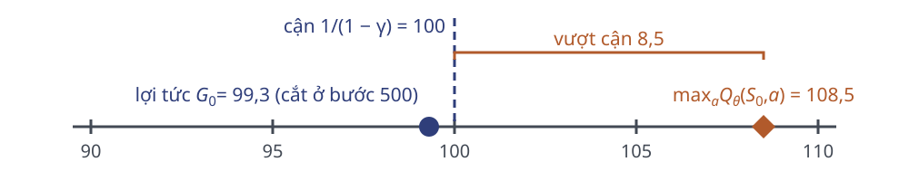
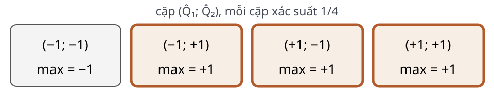
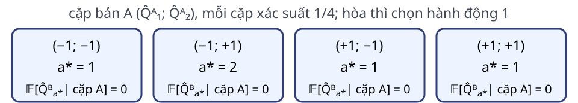
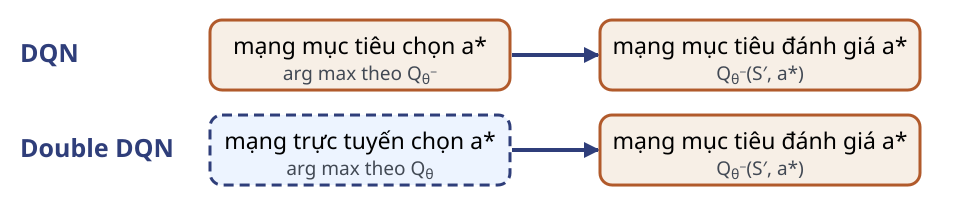
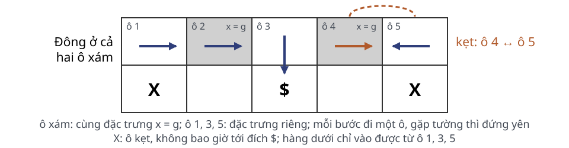
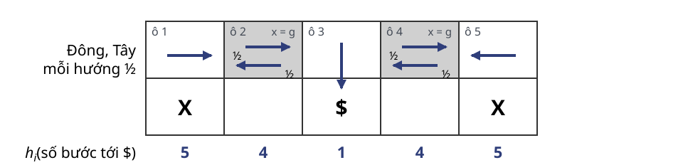
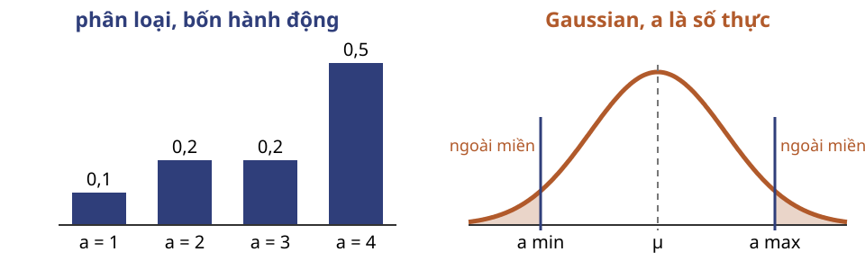
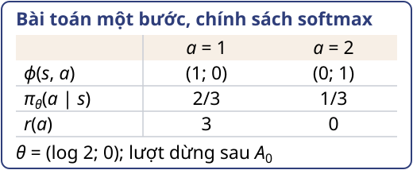
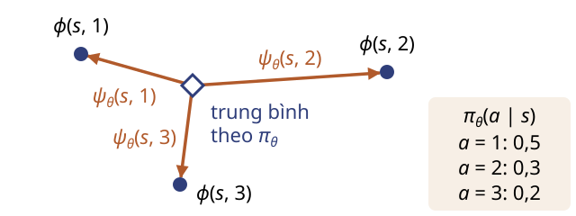
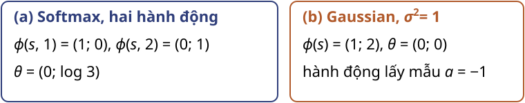

Double DQN và gradient chính sách
Bài 09 · Học tăng cường
Trên ước lượng không chệch có nhiễu, độ chệch của phép cực đại không âm; đánh giá bằng một ước lượng không chệch, độc lập với ước lượng chọn bỏ được phần chệch lên này, còn dưới giả thiết của định lý gradient chính sách, hàm điểm (score function) cho ước lượng không chệch của gradient.
Trường Đại học Công nghệ, Đại học Quốc gia Hà Nội
Năm học 2026–2027, học kỳ 1
Mục tiêu DQN của Bài 08, $R_i+\gamma(1-Z_i)\max_{a'}Q_{\theta^-}(S'_i,a')$, dùng cùng mạng mục tiêu để chọn hành động tốt nhất ở $S'_i$ và để báo giá trị của hành động đó. Khi các giá trị này không chệch nhưng có nhiễu, kỳ vọng của cực đại lớn hơn hoặc bằng cực đại của các giá trị đúng. Double DQN và Double Q-learning chọn hành động bằng một ước lượng và đánh giá bằng một ước lượng khác. Ở nửa sau, chính sách $\pi_\theta$ được học trực tiếp: hàm điểm $\nabla_\theta\log\pi_\theta$ viết gradient của lợi tức kỳ vọng thành một kỳ vọng theo các lượt, và REINFORCE lấy mẫu kỳ vọng đó. Hai nửa có chung một câu hỏi: đại lượng ước lượng từ mẫu để cập nhật có chệch hay không, và dưới giả thiết nào.
Nguồn: bài giảng gốc lecture09-ddqn-and-policy-gradient-part1.pdf (2025–2026), trang 1–2, 11–40; Sutton và Barto (2018), §6.7, §13.1–13.3.
Tiên quyết và quy ước
Ký hiệu: quá trình quyết định Markov (MDP) quan sát đầy đủ, $\gamma\in[0,1)$; quan sát $O_t$ của Bài 08 trùng trạng thái $S_t$.
Ký hiệu Nghĩa
$S_t\in\mathcal S$, $A_t\in\mathcal A$ trạng thái, hành động ở bước $t$; $\lvert\mathcal A\rvert=m$ khi hữu hạn $R_{t+1}$, $T$ phần thưởng sau $A_t$; bước kết thúc lượt (episode) $\rho_0$, $P(s',r\mid s,a)$ phân phối trạng thái đầu; hàm động lực $Z_i$, $U_i$ cờ kết thúc của MDP; cờ cắt ngắn $(S_i,A_i,R_i,S'_i,Z_i,U_i)$ mẫu chuyển thứ $i$ của mini‑batch cỡ $b$
Mọi công thức của Bài 09 viết cho MDP quan sát đầy đủ, nên mục tiêu Bellman áp dụng nguyên dạng. $R_{t+1}$ gắn với chuyển từ bước $t$ sang bước $t+1$. Phần 2 và 3 cần $\mathcal A$ hữu hạn để lấy cực đại; từ phần 4, $\mathcal A$ có thể là một khoảng số thực. $\rho_0$ và $P$ thuộc về môi trường, không phụ thuộc tham số của tác tử. Bài 03 viết $\mu$ cho phân phối đầu và $p$ cho hàm động lực; ở bài này $\mu$ dành cho trung bình của chính sách Gaussian, $p$ cho xác suất quỹ đạo. $Z_i=1$ khi MDP kết thúc tại $S'_i$; $U_i=1$ khi việc thu thập dừng vì một giới hạn ngoài mô hình, như bước 500 của CartPole. Chỉ số $i$ của mini-batch không mang thứ tự thời gian.
Nguồn: ghi chú bài giảng Bài 03, Định nghĩa 03.4, 03.8, 03.13; Bài 08, Bảng ký hiệu, Định nghĩa 08.4, 08.6.
Tiên quyết và quy ước
Nhắc lại: mục tiêu (target) DQN và hàm mất mát (loss) trên mini‑batch (Bài 08):
$$y_i=R_i+\gamma(1-Z_i)\max_{a'}Q_{\theta^-}(S'_i,a'),$$
$$L_B(\theta)=\frac1b\sum_{i=1}^{b}\bigl(\operatorname{sg}(y_i)-Q_\theta(S_i,A_i)\bigr)^2.$$
$\operatorname{sg}$ (dừng gradient, stop-gradient) cho đạo hàm $0$; mẫu cắt ngắn ($U_i=1$, $Z_i=0$) vẫn bootstrap.
$Q_\theta$: mạng trực tuyến (online network); $Q_{\theta^-}$: mạng mục tiêu (target network), $\theta^-\leftarrow\theta$ sau mỗi $C$ bước tối ưu.
Chỉ mạng trực tuyến nhận gradient, qua $Q_\theta(S_i,A_i)$; mạng mục tiêu chỉ đổi tại mốc đồng bộ, nên giữa hai mốc $y_i$ là một số cố định gắn với mẫu chuyển. Mặt nạ $(1-Z_i)$ bỏ phần bootstrap khi MDP kết thúc tại $S'_i$. Một mẫu bị cắt ngắn chưa kết thúc: đi tiếp từ $S'_i$ vẫn còn phần thưởng, nên mục tiêu giữ phần bootstrap. Phép cực đại trong $y_i$ vừa chọn hành động ở $S'_i$ vừa báo giá trị của hành động đó; độ chệch do việc này gây ra được đo ở phần 2.
Nguồn: ghi chú bài giảng Bài 08, Định nghĩa 08.3, 08.4, 08.6, 08.10, 08.12; bài giảng gốc lecture09-ddqn-and-policy-gradient-part1.pdf (2025–2026), trang 3–10.
Tiên quyết và quy ước
Nhắc lại: chính sách $\pi(a\mid s)$ là phân phối trên $\mathcal A$; $\mathbb E_\pi$ lấy theo $\rho_0$, $\pi$, $P$ (Bài 03).
Lợi tức (return) từ bước $t$ và giá trị hành động của $\pi$:
$$G_t=\sum_{k=t}^{T-1}\gamma^{\,k-t}R_{k+1},\qquad q_\pi(s,a)=\mathbb E_\pi\bigl[G_0\mid S_0=s,\,A_0=a\bigr].$$
Nhắc lại: bất đẳng thức Jensen: $f:\mathbb R^m\to\mathbb R$ lồi, $X$ vector ngẫu nhiên khả tích thì $f(\mathbb E[X])\le\mathbb E[f(X)]$.
Chính sách tất định là trường hợp riêng dồn hết xác suất vào một hành động. Kỳ vọng $\mathbb E_\pi$ lấy trên quỹ đạo sinh bởi $S_0\sim\rho_0$, $A_t\sim\pi(\cdot\mid S_t)$ và động lực $P$. Lợi tức chỉ cộng phần thưởng đến sau bước $t$, với $G_T=0$. Với chính sách Markov dừng, $\mathbb E_\pi[G_t\mid S_t=s,A_t=a]$ cũng bằng $q_\pi(s,a)$ ở mọi bước $t$ mà sự kiện điều kiện có xác suất dương. Bất đẳng thức Jensen áp dụng ở phần 2 cho hàm lồi $f(x)=\max_a x_a$ trên vector các ước lượng, và chỉ cho dấu $\ge$; dấu lớn hơn nghiêm ngặt cần thêm điều kiện.
Nguồn: ghi chú bài giảng Bài 03, Định nghĩa 03.9, 03.13, 03.16, Bổ đề 03.20(d); Sutton và Barto (2018), §3.3, §3.5.
Mục tiêu học tập
Tính độ chệch của phép cực đại (maximization bias) trên hai ước lượng có nhiễu.
Tính mục tiêu DQN, Double DQN và Double Q‑learning trên cùng mẫu chuyển.
Chọn họ phân phối theo miền hành động; nêu khi nào cần chính sách ngẫu nhiên.
Tính hàm mục tiêu $J(\theta)$ và hàm điểm của chính sách softmax, Gaussian.
Thực hiện một cập nhật REINFORCE; nêu giả thiết của định lý gradient chính sách.
Năm mục tiêu ứng với các phần 2 đến 6. Mục 1: với hai hành động có giá trị đúng bằng nhau và nhiễu $\pm1$ độc lập, kỳ vọng của cực đại là $1/2$ dù từng ước lượng không chệch. Mục 2: trên cùng một mẫu chuyển, mục tiêu DQN và mục tiêu Double DQN khác nhau; Double Q-learning dùng hai bảng và mỗi bước chỉ cập nhật một bảng. Mục 3: softmax cho tập hành động hữu hạn, Gaussian cho hành động thực; chính sách ngẫu nhiên cần khi đặc trưng gộp hai trạng thái đòi hai hành động khác nhau. Mục 4: hàm mục tiêu là lợi tức kỳ vọng từ trạng thái đầu, hàm điểm là gradient của log xác suất hành động. Mục 5: một bước $\theta\leftarrow\theta+\alpha\widehat g$ trên một lượt, kèm các giả thiết làm $\widehat g$ không chệch.
Nguồn: bài giảng gốc lecture09-ddqn-and-policy-gradient-part1.pdf (2025–2026), trang 2, 11–40.
Nội dung
Mở đầu Độ chệch của phép cực đại Tách chọn và đánh giá Chính sách tham số hóa Hàm mục tiêu và hàm điểm Gradient chính sách và REINFORCE Tổng kết và chuyển tiếp
Đọc trước: Sutton và Barto (2018), §6.7, §13.1–13.3, §13.7.
Các phần 2–7 lần lượt xét: phép cực đại trên ước lượng không chệch có nhiễu có kỳ vọng không nhỏ hơn giá trị đúng lớn nhất; hai cách tách việc chọn hành động khỏi việc đánh giá, Double DQN cho mạng và Double Q-learning cho bảng; khi nào cần học trực tiếp một phân phối hành động (chính sách tham số hóa, parameterized policy); hàm mục tiêu, sai phân hữu hạn và hàm điểm; định lý gradient chính sách và REINFORCE; bảng kết quả với giả thiết không được bỏ. Trong Sutton và Barto, §6.7 bàn độ chệch của phép cực đại và học kép, §13.1 chính sách tham số hóa, §13.2 định lý gradient chính sách, §13.3 REINFORCE, §13.7 chính sách Gaussian.
Nguồn: Sutton và Barto (2018), §6.7 "Maximization Bias and Double Learning", §13.1–13.3, §13.7; bài giảng gốc lecture09-ddqn-and-policy-gradient-part1.pdf (2025–2026), trang 2.
Vấn đề trung tâm
Xác định khi nào ước lượng không chệch: giá trị trong mục tiêu bootstrap; gradient của $J(\theta)=\mathbb E_{\pi_\theta}[G_0]$.
Mỗi $\widehat Q_a$ không chệch cho $q_a$, có nhiễu: ${\mathbb E[\max_a\widehat Q_a]\ge\max_aq_a}$.
Ước lượng đánh giá không chệch, độc lập với ước lượng chọn: không chệch lên; Double DQN gần thỏa.
Hành động thực, hoặc hai trạng thái cùng đặc trưng cần hành động khác: học trực tiếp $\pi_\theta$.
$\pi_\theta(a\mid s)>0$, khả vi: $\nabla_\theta\pi_\theta$ viết qua hàm điểm $\nabla_\theta\log\pi_\theta$.
Môi trường không phụ thuộc $\theta$; $R$, $T$, $\phi$ bị chặn: một lượt cho mẫu không chệch của $\nabla_\theta J$.
Năm dòng ứng với năm phần 2 đến 6. Hai nhóm phương pháp cùng ước lượng từ mẫu một đại lượng dùng để cập nhật: giá trị của hành động được chọn ở trạng thái kế, hoặc gradient của lợi tức kỳ vọng. Dòng 3 cần bản đánh giá không chệch và độc lập với bản chọn; mạng mục tiêu là bản sao trễ của mạng trực tuyến, còn mỗi bảng Double Q-learning bootstrap từ bảng kia, nên độc lập chỉ thỏa gần đúng. Hàm điểm là gradient của log xác suất hành động, định nghĩa ở phần 5; điều kiện đủ cho dòng cuối, gồm đặc trưng bị chặn, nêu cùng định lý ở phần 6. Từ phần 4, $\theta$ là tham số của chính sách, không còn là tham số của mạng giá trị hành động.
Nguồn: bài giảng gốc lecture09-ddqn-and-policy-gradient-part1.pdf (2025–2026), trang 11–40; Sutton và Barto (2018), §6.7, §13.2–13.3; van Hasselt (2010); van Hasselt, Guez và Silver (2016).
2. Độ chệch của phép cực đạiMuốn dùng phép cực đại trong mục tiêu bootstrap, phải biết nó chệch bao nhiêu khi ước lượng có nhiễu.
Mục tiêu DQN · Ước lượng không chệch có nhiễu · Hai hành động nhiễu ±1 · Bất đẳng thức Jensen
Phần mở đầu nhắc lại mục tiêu DQN, trong đó $\max_{a'}Q_{\theta^-}(S'_i,a')$ vừa chọn hành động ở trạng thái kế vừa báo giá trị của hành động đó, cùng bất đẳng thức Jensen. Nhiệm vụ ở đây là đo độ lệch của phép cực đại khi mỗi ước lượng không chệch nhưng có nhiễu: một số đo trên CartPole, một phép tính tay trên hai hành động, rồi một mệnh đề tổng quát. Kết quả giao cho phần 3 là nguyên nhân của độ lệch: cùng một ước lượng chọn và đánh giá.
Phép cực đại trong mục tiêu DQN
Nhu cầu: biết $\max_{a'}$ trong ${y_i=R_i+\gamma(1-Z_i)\max_{a'}Q_{\theta^-}(S'_i,a')}$ có làm $y_i$ chệch lên hay không.
Ví dụ. CartPole: phần thưởng $1$ mỗi bước, $\gamma=0{,}99$: mọi giá trị đúng không vượt ${\sum_{k\ge0}\gamma^k=100}$; một lần chạy DQN (thực hành Bài 08) cho $108{,}5$.

Lưu ý: $108{,}5$ gộp phần do phép cực đại với các sai số xấp xỉ khác.
Số đo lấy từ một lần chạy DQN trong bài thực hành của Bài 08 trên CartPole, sau huấn luyện, tại trạng thái đầu của một lượt; ở đó quan sát trùng trạng thái. Lượt bị cắt ở bước 500 nên lợi tức thực tế là $(1-0{,}99^{500})/0{,}01\approx99{,}3$. Mục tiêu bootstrap qua bước cắt ngắn, nên $Q_\theta$ ước lượng giá trị của bài toán không giới hạn bước; giá trị đó không vượt $100$. Vì vậy $108{,}5$ không là giá trị đúng của chính sách nào. Con số chỉ là một lần chạy và chưa tách được các nguồn sai số; ví dụ tính tay sau đó tách riêng phần do phép cực đại.
Nguồn: bài giảng gốc lecture09-ddqn-and-policy-gradient-part1.pdf (2025–2026), trang 3–12; bài thực hành Bài 08, mục 7 (DQN trên CartPole); ghi chú bài giảng Bài 08, Định nghĩa 08.4.
Nhiễu của hành động được chọn
Tại trạng thái kế: $\widehat Q_a=q_a+\varepsilon_a$, $\mathbb E[\varepsilon_a]=0$, với $q_a$ là giá trị đúng.
Trực quan. Phép cực đại chọn $\widehat Q_a$ lớn nhất, thường là chỗ nhiễu dương lớn.
Cùng $\widehat Q$ chọn $a^*$ và báo $\widehat Q_{a^*}=q_{a^*}+\varepsilon_{a^*}$, nên nhiễu được chọn đi vào giá trị báo cáo.
Định nghĩa. Độ chệch của phép cực đại là
$$\mathbb E\bigl[\max_a\widehat Q_a\bigr]-\max_a q_a.$$
Ở mục tiêu DQN, $\widehat Q_a$ đóng vai $Q_{\theta^-}(S'_i,a)$ và $q_a$ là giá trị đúng của hành động $a$ tại $S'_i$; chữ thường dành cho giá trị đúng, chữ hoa cho ước lượng. Không chệch là tính chất của từng hành động riêng lẻ. Hành động $a^*$ là một biến ngẫu nhiên phụ thuộc chính các nhiễu, nên $\mathbb E[\varepsilon_{a^*}]$ nói chung khác $0$. Kết luận nói về kỳ vọng: một hiện thực cụ thể có thể cho cực đại nhỏ hơn giá trị đúng.
Nguồn: bài giảng gốc lecture09-ddqn-and-policy-gradient-part1.pdf (2025–2026), trang 12–13; Sutton và Barto (2018), §6.7.
Ví dụ: hai hành động có nhiễu ±1
Cho $q_1=q_2=0$; $\varepsilon_1$, $\varepsilon_2$ độc lập, mỗi biến bằng $-1$ hoặc $+1$ với xác suất $1/2$. Tính độ chệch.

$\mathbb E[\widehat Q_a]=\tfrac12(-1)+\tfrac12(+1)=0$; $\;\mathbb E[\max_a\widehat Q_a]=\tfrac14(-1+1+1+1)=\tfrac12$.
Diễn giải: từng ước lượng không chệch, nhưng độ chệch của phép cực đại là ${\tfrac12-0=\tfrac12}$.
Với $q=(0{,}5;\,0)$, độ chệch $0{,}375$; với $q=(3;\,0)$, độ chệch $0$.
Vì $q_1=q_2=0$, mỗi ước lượng bằng đúng nhiễu của nó, và bốn cặp $(\widehat Q_1;\widehat Q_2)$ đồng xác suất. Chỉ cặp $(-1;-1)$ cho cực đại $-1$, nhỏ hơn giá trị đúng; ba cặp còn lại cho $+1$. Độ chệch dương đến từ ba cặp có ít nhất một nhiễu dương: phép cực đại luôn chọn nhiễu dương khi có. Với $q=(0{,}5;\,0)$, bốn cặp cho cực đại $-0{,}5$; $1$; $1{,}5$; $1{,}5$, trung bình $0{,}875$, độ chệch $0{,}375$. Khi hai giá trị đúng cách nhau ít nhất $2$, gấp đôi biên độ nhiễu, hành động tốt hơn thắng ở mọi cặp và độ chệch bằng $0$.
Nguồn: ví dụ sư phạm minh họa bài giảng gốc lecture09-ddqn-and-policy-gradient-part1.pdf (2025–2026), trang 12–13.
Độ chệch của phép cực đại không âm
Mệnh đề. Với $\mathcal A$ hữu hạn và mọi $\widehat Q_a$ khả tích: $\mathbb E\bigl[\max_a\widehat Q_a\bigr]\ge\max_a\mathbb E[\widehat Q_a]$. Khi ${\mathbb E[\widehat Q_a]=q_a}$, độ chệch ${\ge0}$.
Chứng minh. $f(x)=\max_ax_a$ lồi; Jensen cho $f(\mathbb E[X])\le\mathbb E[f(X)]$ với ${X=(\widehat Q_a)_{a\in\mathcal A}}$.
Ý nghĩa: bằng nhau khi và chỉ khi có $b^*\in\arg\max_aq_a$ với ${\widehat Q_{b^*}=\max_a\widehat Q_a}$ hầu chắc chắn.
Câu hỏi: nếu $\widehat Q_1>\widehat Q_2$ hầu chắc chắn, cả hai không chệch, độ chệch bằng bao nhiêu?
Lời giải: $0$, vì $\max_a\widehat Q_a=\widehat Q_1$ và $q_1=\mathbb E[\widehat Q_1]\ge\mathbb E[\widehat Q_2]=q_2$.
Giả thiết khả tích để hai vế có nghĩa; giả thiết không chệch để vế phải bằng giá trị đúng $\max_aq_a$. Không cần nhiễu độc lập giữa các hành động. Điều kiện dấu bằng: với $b^*$ là một hành động có giá trị đúng lớn nhất, $\max_a\widehat Q_a-\widehat Q_{b^*}\ge0$ có kỳ vọng $0$ khi và chỉ khi nó bằng $0$ hầu chắc chắn; khi có nhiều hành động như vậy, chọn hành động nào cũng được, và hòa vẫn tính là đạt cực đại. Trong $y_i$, $\widehat Q_a$ là $Q_{\theta^-}(S'_i,a)$; độ chệch lớn nhất khi các hành động tại $S'_i$ có giá trị đúng gần nhau so với sai số của mạng. Nguyên nhân của độ chệch là cùng một ước lượng chọn hành động và báo giá trị; phần 3 tách hai vai này.
Nguồn: bài giảng gốc lecture09-ddqn-and-policy-gradient-part1.pdf (2025–2026), trang 12–13; Sutton và Barto (2018), §6.7.
3. Tách chọn và đánh giáMuốn giảm độ chệch của phép cực đại, phải chọn hành động bằng một ước lượng và đánh giá bằng ước lượng khác.
Hai bản ước lượng độc lập · Mục tiêu Double DQN · Double Q-learning · Tương quan của mạng mục tiêu
Phần 2 kết luận rằng phép cực đại trên các ước lượng không chệch có nhiễu có độ chệch không âm, vì cùng một ước lượng vừa chọn hành động vừa báo giá trị. Nhiệm vụ ở đây là tách hai vai đó: một ví dụ và một mệnh đề cho hai bản ước lượng độc lập, Double DQN cho mạng, Double Q-learning cho bảng. Kết quả giao cho phần 4: chính sách suy ra từ $\arg\max_aQ$, xác suất hành động không được học, và mỗi bước cần phép cực đại trên $\mathcal A$.
Ví dụ: hai bản ước lượng độc lập
Nhu cầu: đánh giá bằng ước lượng không tham gia phép chọn.
Cho $q_1=q_2=0$; $\widehat Q^A_a$, $\widehat Q^B_a$ bằng $q_a$ cộng nhiễu; bốn nhiễu độc lập, $\pm1$ xác suất $1/2$.
Chọn $a^*=\arg\max_a\widehat Q^A_a$; báo $\widehat Q^B_{a^*}$.

Diễn giải: B độc lập với A, không chệch, nên ${\mathbb E[\widehat Q^B_{a^*}]=0=\max_aq_a}$. Nếu $\widehat Q^A$ vừa chọn vừa báo: ${\mathbb E[\max_a\widehat Q^A_a]=\tfrac12}$.
Bản A quyết định hành động; bản B độc lập với bản A, nên khi biết $a^*$, nhiễu $\varepsilon^B_{a^*}$ vẫn có kỳ vọng $0$. Lấy kỳ vọng theo bốn cặp của bản A cho giá trị báo cáo trung bình $0$, đúng bằng giá trị đúng lớn nhất. Quy tắc phá hòa không đổi kết quả. Bản A vừa chọn vừa báo cho cực đại $-1$, $+1$, $+1$, $+1$ ở bốn cặp, trung bình $\tfrac12$. Hai điều kiện được dùng: bản B không chệch và độc lập với bản A. Khi giá trị đúng khác nhau, bộ ước lượng kép có thể chệch âm.
Nguồn: bài giảng gốc lecture09-ddqn-and-policy-gradient-part1.pdf (2025–2026), trang 14; Sutton và Barto (2018), §6.7; van Hasselt (2010).
Ước lượng kép không chệch lên
Mệnh đề. $\mathcal A$ hữu hạn; $\widehat Q^A$, $\widehat Q^B$ độc lập; $\mathbb E[\widehat Q^B_a]=q_a$; $a^*$ là hàm của $\widehat Q^A$. Khi đó
$$\mathbb E\bigl[\widehat Q^B_{a^*}\bigr]=\mathbb E[q_{a^*}]\le\max_aq_a.$$
Chứng minh. Khi biết $\widehat Q^A$, $\widehat Q^B_{a^*}$ có kỳ vọng $q_{a^*}$; lấy kỳ vọng, dùng $q_{a^*}\le\max_aq_a$.
Ý nghĩa: bộ ước lượng kép (double estimator) không chệch lên, nhưng chệch âm khi chọn sai với xác suất dương: $q=(0{,}5;\,0)$, nhiễu $\pm1$: ${\mathbb E[\widehat Q^B_{a^*}]=\tfrac34\cdot0{,}5=0{,}375}$, chệch $-0{,}125$.
Ba giả thiết có vai trò riêng: độc lập để nhiễu của bản B không phụ thuộc hành động đã thắng, không chệch để kỳ vọng của bản B tại mỗi hành động bằng giá trị đúng, và $a^*$ là hàm của bản A để phép chọn không nhìn bản B. Bỏ độc lập, chẳng hạn lấy bản B trùng bản A, ta trở lại phép cực đại với độ chệch $\tfrac12$. Với $q=(0{,}5;\,0)$, bản A chọn hành động 1 ở ba trong bốn cặp, nên kỳ vọng là $\tfrac34\cdot0{,}5=0{,}375$, thấp hơn $0{,}5$ một lượng $0{,}125$; một bản cho $0{,}875$. Dấu bằng khi và chỉ khi $a^*$ là hành động tốt nhất hầu chắc chắn.
Nguồn: van Hasselt (2010); Sutton và Barto (2018), §6.7; ghi chú bài giảng, Mệnh đề 09.4.
Mục tiêu Double DQN
Nhu cầu: mục tiêu DQN dùng $Q_{\theta^-}$ cả để chọn lẫn để đánh giá hành động tại $S'_i$.

$$a_i^*=\arg\max_{a}Q_\theta(S'_i,a),\qquad y_i=R_i+\gamma(1-Z_i)\operatorname{sg}\bigl(Q_{\theta^-}(S'_i,a_i^*)\bigr).$$
Lưu ý: khi $Z_i=1$, mặt nạ cho $y_i=R_i$; hành động $a_i^*$ không ảnh hưởng.
Chỉ dòng mục tiêu đổi so với DQN: mạng trực tuyến chọn theo thứ hạng hiện tại, mạng mục tiêu đánh giá hành động được chọn. Phép arg max là hằng từng khúc theo $\theta$, nên không có gradient đi qua $a_i^*$; $\operatorname{sg}$ chặn gradient vào mục tiêu như ở Bài 08. Cài đặt theo mini-batch có thể tính $a_i^*$ cho mọi mẫu rồi nhân mặt nạ $(1-Z_i)$; khi $Z_i=1$, giá trị tại $S'_i$ không vào mục tiêu. Khi hòa, cần ghi quy tắc phá hòa, chẳng hạn chỉ số nhỏ nhất.
Nguồn: bài giảng gốc lecture09-ddqn-and-policy-gradient-part1.pdf (2025–2026), trang 14–16; van Hasselt, Guez và Silver (2016); ghi chú bài giảng Bài 08, Định nghĩa 08.4, 08.12.
Ví dụ: một mẫu chuyển, hai mục tiêu
Cho $R=1$, $\gamma=0{,}9$, $Z=0$ và hai mạng tại $S'$ như hình. Tính hai mục tiêu.
DQN: $\max_aQ_{\theta^-}(S',a)=5$, nên $y=1+0{,}9\cdot5=5{,}5$.
Double DQN: $a^*=2$; $Q_{\theta^-}(S',2)=4$, nên $y=1+0{,}9\cdot4=4{,}6$.
Diễn giải: mục tiêu giảm $0{,}9$; với $Z=0$, luôn có $y^{\mathrm{DDQN}}\le y^{\mathrm{DQN}}$.
Hai mạng xếp hạng hai hành động ngược nhau: mạng mục tiêu ưu tiên hành động 1, mạng trực tuyến ưu tiên hành động 2. Mục tiêu Double DQN giảm $0{,}9$. Bất đẳng thức trong dòng diễn giải đúng trên từng mẫu vì $Q_{\theta^-}(S',a^*)\le\max_aQ_{\theta^-}(S',a)$, dấu bằng khi hai mạng chọn cùng hành động; nó không nói mục tiêu nào gần giá trị đúng hơn trong một mẫu cụ thể. Bộ số này được bài thực hành của Bài 08 kiểm bằng phép kiểm tự động trước khi huấn luyện Double DQN.
Nguồn: ví dụ sư phạm theo bài giảng gốc lecture09-ddqn-and-policy-gradient-part1.pdf (2025–2026), trang 15–16; bài thực hành Bài 08, mục 15.2.
Thuật toán Double DQN
Thuật toán. Như DQN (Thuật toán 08.13): $\theta^-\leftarrow\theta$, bộ nhớ phát lại $\mathcal D\leftarrow\varnothing$; lặp tới $t_{\mathrm{end}}$ bước môi trường:
Chọn $A_t$ $\epsilon_{\mathrm{exp}}$-tham lam theo $Q_\theta$ ($\epsilon_{\mathrm{exp}}$: xác suất thăm dò); lưu mẫu chuyển vào $\mathcal D$.
Khi $\mathcal D$ có ít nhất $N_{\mathrm{start}}$ mẫu, sau mỗi $F$ bước môi trường: rút đều $b$ mẫu.
$a_i^*=\arg\max_aQ_\theta(S'_i,a)$; $y_i=R_i+\gamma(1-Z_i)Q_{\theta^-}(S'_i,a_i^*)$.
Một bước tối ưu trên $L_B(\theta)$ với $\operatorname{sg}(y_i)$.
Sau mỗi $C$ bước tối ưu: $\theta^-\leftarrow\theta$.
Chỉ bước 3 khác DQN; mảng $Q_\theta(S'_i,\cdot)$, $Q_{\theta^-}(S'_i,\cdot)$ cỡ $b\times m$; $a^*$, $y$ dài $b$.
Đầu vào giống DQN: $\gamma\in[0,1)$, xác suất thăm dò $\epsilon_{\mathrm{exp}}$, bộ tối ưu, dung lượng $N$ của bộ nhớ phát lại, cỡ mini-batch $b$, $N_{\mathrm{start}}$ là số mẫu tối thiểu trong bộ nhớ trước bước tối ưu đầu, $F$ là số bước môi trường giữa hai bước tối ưu, $C$ và ngân sách $t_{\mathrm{end}}$; Bài 08 viết ngân sách là $T$, ở đây $T$ dành cho bước kết thúc lượt. Bước 3 cần thêm một lần tính của mạng trực tuyến trên $S'_i$; mọi đại lượng của bước 3 tính trong chế độ không lấy gradient. Hành vi là $\epsilon_{\mathrm{exp}}$-tham lam theo mạng trực tuyến, nên dữ liệu trong bộ nhớ là dữ liệu khác chính sách như ở DQN. Đầu ra là $\theta$ và chính sách tham lam theo $Q_\theta$.
Nguồn: ghi chú bài giảng Bài 08, Thuật toán 08.13; van Hasselt, Guez và Silver (2016); bài thực hành Bài 08, mục 14 và 15.2.
Bài tập: mục tiêu DQN và Double DQN
Câu hỏi: cho $R=1$, $\gamma=0{,}8$; tại $S'$: $Q_{\theta^-}(S',\cdot)=(2;\,7)$, $Q_\theta(S',\cdot)=(4;\,1)$. Tính mục tiêu DQN và Double DQN khi (a) $Z=0$; (b) $Z=1$.
Lời giải: (a) DQN: $\max_aQ_{\theta^-}(S',a)=7$, $y=1+0{,}8\cdot7=6{,}6$.
Double DQN: $a^*=1$ theo $Q_\theta$; $Q_{\theta^-}(S',1)=2$, $y=1+0{,}8\cdot2=2{,}6$.
(b) Cả hai bằng $R=1$. Kết luận: $2{,}6\le6{,}6$, đúng chiều $y^{\mathrm{DDQN}}\le y^{\mathrm{DQN}}$.
Bài tập kiểm việc đọc đúng vai của hai mạng và mặt nạ kết thúc. Gợi ý: xác định trước hàng nào chọn, hàng nào đánh giá. Ở đây hai mạng xếp hạng ngược nhau và khoảng cách lớn, nên hai mục tiêu cách nhau $4$. Câu (b) kiểm rằng khi lượt kết thúc, hành động được chọn không ảnh hưởng mục tiêu.
Nguồn: bài tập theo bài giảng gốc lecture09-ddqn-and-policy-gradient-part1.pdf (2025–2026), trang 15–16.
Phạm vi của Double DQN
$\theta^-$ là bản sao trễ của $\theta$ và cùng học trên một bộ nhớ, nên hai mạng tương quan.
Điều kiện độc lập không thỏa: không bảo đảm hết chệch lên; mức giảm phải đo.
Double DQN chỉ đổi mục tiêu; tương quan mẫu và việc thiếu bảo đảm hội tụ vẫn như DQN.
Mệnh đề ước lượng kép cần bản đánh giá độc lập với bản chọn; ở Double DQN, mạng mục tiêu là bản sao của mạng trực tuyến tại mốc đồng bộ, nên mệnh đề không áp dụng. Bài giảng gốc liệt kê những điều Double DQN không sửa: tương quan mẫu, tính không dừng của mục tiêu, bảo đảm hội tụ với mạng tùy ý. Trong bài thực hành Bài 08 trên Lunar Lander, năm hạt giống, $10^5$ bước, Double DQN đạt $200{,}0$ và cấu hình gốc $205{,}4$ trên cùng hạt giống; hiệu $-5{,}4$ chưa phân biệt được ($t=-0{,}38$).
Nguồn: bài giảng gốc lecture09-ddqn-and-policy-gradient-part1.pdf (2025–2026), trang 17–19; van Hasselt (2010); bài thực hành Bài 08, mục 15.4.
Double Q-learning dạng bảng
Nhu cầu: hai ước lượng học trên các mẫu khác nhau, thay cho một bản sao trễ.
Hai bảng $Q_1$, $Q_2$; mỗi mẫu chuyển chỉ cập nhật một bảng, bảng kia đánh giá.
Hành vi: $\epsilon_{\mathrm{exp}}$-tham lam theo $Q_1+Q_2$.
Mỗi mẫu chuyển chỉ đi vào một bảng, nên hai bảng ước lượng từ hai tập mẫu khác nhau. Bảng được cập nhật chọn hành động tại $S'$ bằng phép cực đại của chính nó, bảng kia báo giá trị của hành động đó. Hai bảng không độc lập hoàn toàn: mỗi bảng bootstrap từ bảng kia và hành vi dùng tổng hai bảng. Bài thực hành Flappy Bird của Bài 07 đã cài một phiên bản với hàm giá trị tuyến tính.
Nguồn: bài giảng gốc lecture09-ddqn-and-policy-gradient-part1.pdf (2025–2026), trang 20–21; van Hasselt (2010); Sutton và Barto (2018), §6.7.
Ví dụ: một cập nhật Double Q-learning
Cho $R=1$, $\gamma=0{,}9$, $Z=0$, $\alpha=0{,}1$, $Q_1(S,A)=4$, hai bảng tại $S'$ như hình; cập nhật $Q_1$.
$a^*=\arg\max_aQ_1(S',a)=2$; mục tiêu $y_1=1+0{,}9\cdot Q_2(S',2)=4{,}6$.
Sai số $4{,}6-4=0{,}6$; $Q_1(S,A)\leftarrow4+0{,}1\cdot0{,}6=4{,}06$.
Diễn giải: $Q_1$ vai $Q_\theta$, $Q_2$ vai $Q_{\theta^-}$: $4{,}6$ là mục tiêu Double DQN.
Nếu đồng xu chọn cập nhật $Q_2$, vai đổi: $Q_2$ chọn hành động 1 vì $5>4$, $Q_1$ đánh giá bằng $3$, mục tiêu $1+0{,}9\cdot3=3{,}7$. Giống Double DQN, mục tiêu dùng giá trị của bảng kia tại hành động do bảng cập nhật chọn; khác Double DQN, chỉ một ô của một bảng đổi, và bảng kia không là bản sao trễ. Lấy cực đại của $Q_2$ thay vì $Q_2(S',a^*)$ sẽ mất cơ chế tách.
Nguồn: ví dụ sư phạm theo thuật toán ở bài giảng gốc lecture09-ddqn-and-policy-gradient-part1.pdf (2025–2026), trang 20.
Thuật toán Double Q-learning
Thuật toán. Đầu vào $\alpha\in(0,1]$, $\gamma\in[0,1)$, $\epsilon_{\mathrm{exp}}$; khởi tạo $Q_1$, $Q_2$ tùy ý, bằng $0$ tại trạng thái kết thúc. Mỗi lượt, từ $S$:
Chọn $A$ $\epsilon_{\mathrm{exp}}$-tham lam theo $Q_1+Q_2$; nhận $R$, $S'$, $Z$.
Với xác suất $1/2$: $a^*=\arg\max_aQ_1(S',a)$ và
$$Q_1(S,A)\leftarrow Q_1(S,A)+\alpha\bigl[R+\gamma(1-Z)\,Q_2(S',a^*)-Q_1(S,A)\bigr].$$
Ngược lại: đổi vai $Q_1$ và $Q_2$.
$S\leftarrow S'$; dừng lượt khi $Z=1$.
Thứ tự trong một bước: chọn hành động theo tổng hai bảng, quan sát mẫu chuyển, tung đồng xu, cập nhật đúng một ô của một bảng. Khi $Z=1$, mặt nạ bỏ phần bootstrap và giá trị tại trạng thái kết thúc không cần tính. Lập luận không chệch lên của ví dụ hai bản cần bản đánh giá độc lập với bản chọn; ở đây mỗi bảng bootstrap từ bảng kia, nên điều kiện chỉ thỏa ở dạng lý tưởng. Mỗi bảng chỉ nhận khoảng một nửa số mẫu, nên mỗi bảng học chậm hơn Q-learning một bảng.
Nguồn: bài giảng gốc lecture09-ddqn-and-policy-gradient-part1.pdf (2025–2026), trang 20–21; van Hasselt (2010); Sutton và Barto (2018), §6.7.
So sánh DQN, Double DQN và Double Q-learning
DQN Double DQN Double Q-learning
chọn $a^*$ tại $S'$ $Q_{\theta^-}$ $Q_\theta$ bảng được cập nhật đánh giá $a^*$ $Q_{\theta^-}$ $Q_{\theta^-}$ bảng còn lại quan hệ hai ước lượng cùng một ước lượng bản sao trễ, tương quan mẫu khác nhau, bootstrap từ nhau dữ liệu cập nhật mini‑batch từ bộ nhớ phát lại như DQN từng mẫu chuyển độ chệch của mục tiêu $\ge0$ khi mỗi ước lượng không chệch không bảo đảm hết chệch lên; phải đo $\le0$ nếu bản đánh giá không chệch, độc lập (chỉ lý tưởng)
Ba phương pháp khác nhau ở cặp ước lượng chọn và đánh giá. Hàng cuối đọc theo hai mệnh đề: một ước lượng cho cả hai việc thì độ chệch không âm; hai ước lượng độc lập, bản đánh giá không chệch, thì không chệch lên nhưng có thể chệch âm. Tên "Double" chỉ nguyên tắc dùng hai ước lượng; dùng bốn hay tám ước lượng là một thuật toán khác, với quan hệ tương quan và chi phí khác, và không suy ra được từ tên.
Nguồn: bài giảng gốc lecture09-ddqn-and-policy-gradient-part1.pdf (2025–2026), trang 14–21.
Bài tập: Double DQN và Double Q-learning
Câu hỏi: (1) Double DQN: mạng nào chọn, mạng nào đánh giá? (2) $Z_i=1$: $y_i$ bằng gì?
(3) Vì sao Double DQN vẫn có thể chệch lên? (4) Double Q-learning cập nhật mấy ô?
Lời giải: (1) $Q_\theta$ chọn, $Q_{\theta^-}$ đánh giá; (2) $R_i$; (3) hai mạng tương quan; (4) một ô của một bảng.
Lưu ý: chọn bằng $\arg\max_aQ$ thì không học xác suất hành động; mỗi bước cần $\max$ trên $\mathcal A$.
Câu (3): vì hai mạng tương quan, giả thiết độc lập của mệnh đề ước lượng kép không thỏa. Bốn câu kiểm bốn phân biệt của phần: vai của hai mạng, mặt nạ kết thúc, điều kiện độc lập, và số bảng được cập nhật. Dòng cuối là đầu ra cho phần 4: cả ba phương pháp chọn hành động bằng $\arg\max_aQ(s,a)$, nên xác suất chọn hành động không được học: chính sách tham lam là tất định, và $\epsilon_{\mathrm{exp}}$-tham lam chỉ thêm một mức ngẫu nhiên cố định; mỗi bước cần giải một bài toán cực đại trên $\mathcal A$, điều khó làm khi hành động là một số thực.
Nguồn: bài giảng gốc lecture09-ddqn-and-policy-gradient-part1.pdf (2025–2026), trang 14–22.
4. Chính sách tham số hóaMuốn học xác suất hành động hoặc chọn hành động liên tục, phải học trực tiếp phân phối $\pi_\theta$.
Gộp trạng thái · Chính sách ngẫu nhiên · Phân phối phân loại · Softmax · Gaussian
Phần 3 kết thúc ở một giới hạn chung của DQN, Double DQN và Double Q-learning: hành động được chọn bằng $\arg\max_aQ$, nên xác suất hành động không được học, và mỗi bước cần một phép cực đại trên $\mathcal A$. Nhiệm vụ ở đây: chỉ ra hai tình huống mà giới hạn này gây hại, lưới gộp trạng thái và hành động liên tục, rồi định nghĩa chính sách có tham số cùng hai họ phân phối. Kết quả giao cho phần 5: một họ $\pi_\theta$ khả vi, còn thiếu một tiêu chí để chỉnh $\theta$.
Giới hạn của chính sách tham lam theo $Q$
Nhắc lại: chọn bằng $\arg\max_aQ$ thì không học xác suất hành động.
Ví dụ. Lưới năm ô: đặc trưng $x(s)$ phân biệt ô 1, 3, 5, gộp ô 2 và ô 4 ($x=\mathrm g$); ô 2 cần Đông, ô 4 cần Tây.

Theo $x$, chính sách tất định (Bài 04: xác định) đi cùng hướng ở hai ô xám: nếu Đông, từ ô 4 lặp ${4\to5\to4}$ mãi.
Lưới: hàng trên năm ô, ô kẹt X dưới ô 1 và ô 5, ô đích dưới ô 3. Hành động: Đông, Tây, Nam; đi Nam từ ô 2, ô 4 hoặc đi ra ngoài lưới thì đứng yên; vào X là không bao giờ tới đích. Đặc trưng $x(s)$ phân biệt ba ô trắng và chỉ gộp hai ô xám, nên mọi hàm của đặc trưng, gồm $Q_\theta$ và phép tham lam theo nó, cho cùng hành động ở ô 2 và ô 4. Chọn Tây ở cả hai thì kẹt đối xứng giữa ô 1 và ô 2; chọn Nam thì đứng yên. Như vậy mọi chính sách tất định theo $x$ để hai trong năm ô xuất phát không bao giờ tới đích.
Nguồn: bài giảng gốc lecture09-ddqn-and-policy-gradient-part1.pdf (2025–2026), trang 22–24; Sutton và Barto (2018), §13.1.
Ví dụ: lưới gộp trạng thái, chính sách ngẫu nhiên
Ô 2, ô 4: Đông hoặc Tây, mỗi hướng $\tfrac12$; ô 1 Đông, ô 3 Nam, ô 5 Tây; tính $h_i$, số bước kỳ vọng tới đích từ ô $i$.

Từ ô 2: ${h_2=\tfrac12\cdot2+\tfrac12(2+h_2)}$, nên $h_2=4$; đối xứng, $h_4=4$.
Diễn giải: ô đầu đều: ${(5+4+1+4+5)/5=3{,}8}$ bước; tất định kẹt ở hai ô.
Lưu ý: MDP hữu hạn, $\gamma<1$, chính sách theo ô: có tối ưu tất định (Định lý 04.25).
Đi Đông từ ô 2 cần hai bước: sang ô 3 rồi xuống đích; đi Tây cần hai bước để trở lại ô 2, rồi thêm $h_2$. Với $h_1=h_5=5$, $h_3=1$: trung bình trên năm ô là $(5+4+1+4+5)/5=3{,}8$. Tiêu chí là trung bình trên ô xuất phát; từ riêng ô 2, tất định Đông chỉ cần $2$ bước. Với xác suất Đông là $p$ ở hai ô xám, $h_2=2/p$ và $h_4=2/(1-p)$; trung bình nhỏ nhất tại $p=\tfrac12$. Định lý 04.25 vẫn đúng: chính sách được phụ thuộc vào ô cho $h_2=h_4=2$. Gộp trạng thái thu hẹp lớp chính sách xuống các hàm của $x$; ngẫu nhiên hóa không khôi phục thông tin về ô.
Nguồn: bài giảng gốc lecture09-ddqn-and-policy-gradient-part1.pdf (2025–2026), trang 25 (xác suất $0{,}5$); số bước $h_i$ tính bổ sung; ghi chú bài giảng Bài 04, Định lý 04.25; Sutton và Barto (2018), §13.1, Ví dụ 13.1.
Phân phối hành động có tham số
Nhu cầu: học xác suất hành động; chọn hành động thực (góc lái) không cần $\max_a$.
Định nghĩa. Chính sách tham số hóa (parameterized policy) $\pi_\theta(a\mid s)$: xác suất hoặc mật độ của $a$ tại $s$, khả vi theo $\theta\in\mathbb R^d$ (từ đây $\theta$ là tham số của chính sách).
Điều khiển: lấy mẫu $A\sim\pi_\theta(\cdot\mid s)$.
Học: chỉnh $\theta$ để tăng xác suất của hành động có lợi tức cao.
Với góc lái là một số thực, phép tham lam $\arg\max_aQ(s,a)$ là một bài toán tối ưu liên tục phải giải ở mỗi bước. Chính sách có tham số trả về trực tiếp một phân phối để lấy mẫu. Từ đây $\theta$ là tham số của chính sách, không còn là tham số của mạng giá trị hành động. Với hành động liên tục, $\pi_\theta(a\mid s)$ là mật độ tại $a$, có thể lớn hơn $1$; xác suất chỉ xuất hiện khi lấy tích phân trên một khoảng.
Nguồn: bài giảng gốc lecture09-ddqn-and-policy-gradient-part1.pdf (2025–2026), trang 22, 26; Sutton và Barto (2018), §13.1, §13.7.
Ví dụ: phân phối hành động
Bốn hành động: phân phối đều $\tfrac14$ không có tham số; phân phối phân loại ${(0{,}1;\,0{,}2;\,0{,}2;\,0{,}5)}$.

Hành động thực: Gaussian $\mathcal N(\mu(s),\sigma^2)$; miền bị chặn cần cắt hoặc biến đổi mẫu.
Phân phối đều không phụ thuộc trạng thái và không có tham số nên không học được. Phân phối phân loại gán một xác suất cho mỗi hành động; ở đây hành động 4 được chọn một nửa số lần. Gaussian đặt mật độ dương trên mọi số thực, nên một phần khối xác suất rơi ngoài miền $[a_{\min},a_{\max}]$, như góc lái giới hạn; cài đặt thường cắt mẫu về miền hoặc đưa mẫu qua một hàm như $\tanh$, và mỗi cách đổi chính sách thực sự được dùng.
Nguồn: bài giảng gốc lecture09-ddqn-and-policy-gradient-part1.pdf (2025–2026), trang 26–28, 37–38.
Chính sách softmax và chính sách Gaussian
Ký hiệu: $\phi(s,a)$, $\phi(s)\in\mathbb R^d$: vector đặc trưng cố định.
Softmax Gaussian, $\sigma^2$ cố định
miền $\mathcal A$ hữu hạn $\mathbb R$ $\pi_\theta(a\mid s)$ $\dfrac{e^{\phi(s,a)^\top\theta}}{\sum_be^{\phi(s,b)^\top\theta}}$ $\mathcal N\bigl(a;\,\phi(s)^\top\theta,\sigma^2\bigr)$ chuẩn hóa $\sum_a\pi_\theta(a\mid s)=1$ $\int\pi_\theta(a\mid s)\,\mathrm da=1$
Câu hỏi: góc lái là số thực trong một khoảng: chọn họ nào?
Lời giải: Gaussian, cắt hoặc biến đổi mẫu về khoảng; softmax cần tập hữu hạn.
Lưu ý: muốn chỉnh $\theta$, cần một hàm mục tiêu $J(\theta)$ đo lợi tức kỳ vọng của $\pi_\theta$.
Softmax dùng đặc trưng cặp trạng thái–hành động $\phi(s,a)\in\mathbb R^d$ và cho mọi hành động xác suất dương; Gaussian dùng đặc trưng trạng thái $\phi(s)\in\mathbb R^d$ làm trung bình tuyến tính $\mu=\phi(s)^\top\theta$, với $\sigma^2$ giữ cố định. Cả hai khả vi theo $\theta$. Rời rạc hóa góc lái thành vài giá trị rồi dùng softmax cũng là một lựa chọn, đổi lại độ phân giải. Dòng cuối là đầu ra cho phần 5: muốn chỉnh $\theta$, cần một hàm mục tiêu đo lợi tức kỳ vọng của $\pi_\theta$.
Nguồn: bài giảng gốc lecture09-ddqn-and-policy-gradient-part1.pdf (2025–2026), trang 29, 35–38; Sutton và Barto (2018), §13.1, §13.7.
5. Hàm mục tiêu và hàm điểmMuốn tăng $J(\theta)$ bằng bước gradient, phải tính được đạo hàm log xác suất của hành động đã lấy mẫu.
Hàm mục tiêu · Bước tăng gradient · Sai phân hữu hạn · Hàm điểm softmax · Hàm điểm Gaussian
Phần 4 cho một họ chính sách $\pi_\theta$ khả vi, softmax cho tập hành động hữu hạn và Gaussian cho hành động thực, nhưng chưa có tiêu chí để chỉnh $\theta$. Nhiệm vụ ở đây: định nghĩa hàm mục tiêu $J(\theta)$, viết bước tăng gradient, chỉ ra vì sao sai phân hữu hạn tốn kém khi chỉ quan sát được lượt mẫu, rồi định nghĩa hàm điểm và tính nó cho hai họ. Kết quả giao cho phần 6: hàm điểm của một bước, có kỳ vọng bằng $0$; còn thiếu gradient của $J$ theo cả lượt.
Hàm mục tiêu của chính sách
Nhu cầu: một số đo chất lượng của $\pi_\theta$, để so sánh hai giá trị của $\theta$.

Ví dụ. Lượt một bước nên $G_0=r(A_0)$: ${J=3\cdot\tfrac23+0\cdot\tfrac13=2}$.
Định nghĩa. Hàm mục tiêu (objective function; khác mục tiêu $y_i$ của DQN) $J(\theta)=\mathbb E_{\pi_\theta}[G_0]$, với ${G_0=\sum_{t=0}^{T-1}\gamma^tR_{t+1}}$, $S_0\sim\rho_0$.
Giả thiết: $T<\infty$ hầu chắc chắn; sau $T$, trạng thái hấp thụ có phần thưởng $0$.
Kỳ vọng $\mathbb E_{\pi_\theta}$ lấy theo $S_0\sim\rho_0$, $A_t\sim\pi_\theta(\cdot\mid S_t)$ và $(S_{t+1},R_{t+1})\sim P(\cdot\mid S_t,A_t)$; chỉ chính sách phụ thuộc $\theta$. Trên thẻ dữ kiện, $J(\theta)=\sum_ar(a)\pi_\theta(a\mid s)=3\pi_\theta(1\mid s)$. Với lượt hai bước $R_1=1$, $R_2=2$, $\gamma=0{,}9$: $G_0=1+0{,}9\cdot2=2{,}8$. Quy ước hấp thụ cho phép viết tổng tới vô hạn mà không đổi $G_0$. Hàm mục tiêu $J$ khác mục tiêu $y_i$ của DQN: $J$ là một số cần cực đại hóa theo $\theta$, còn $y_i$ là giá trị hồi quy của một mẫu chuyển.
Nguồn: bài giảng gốc lecture09-ddqn-and-policy-gradient-part1.pdf (2025–2026), trang 30, nguồn viết $J(\theta)=V^{\pi}(s_1)$ với trạng thái đầu cố định; Sutton và Barto (2018), §13.2.
Bước tăng gradient
Nhắc lại: DQN cực tiểu hóa hàm mất mát: $\theta\leftarrow\theta-\eta\nabla_\theta L_B(\theta)$.
Cực đại hóa $J$: đi theo chiều gradient, với bước $\alpha>0$:
$$\theta\leftarrow\theta+\alpha\,\nabla_\theta J(\theta).$$
Ví dụ. Softmax, $\phi(s,1)=(1;\,0)$, $\phi(s,2)=(0;\,1)$, $r=(3;\,0)$ đã biết: $J(\theta)=3\pi_\theta(1\mid s)$, và ${\nabla_\theta\pi_\theta(1\mid s)=\pi_\theta(1\mid s)\pi_\theta(2\mid s)(1;\,-1)}$.
Tính trực tiếp tại $\theta=(\log2;\,0)$: ${\nabla_\theta J=3\cdot\tfrac23\cdot\tfrac13(1;\,-1)=(\tfrac23;\,-\tfrac23)}$.
Lưu ý: chưa biết $r$ và $P$ thì $J$ chỉ đo được qua lợi tức của các lượt mẫu.
Hai bài toán tối ưu ngược chiều: DQN hồi quy $Q_\theta$ về mục tiêu nên hạ gradient của hàm mất mát; $J$ là lợi tức kỳ vọng, cần tăng, nên bước có dấu cộng. Tìm một hàm giá trị tốt là cực tiểu hóa sai số dự đoán rồi suy chính sách bằng $\arg\max$; tìm một chính sách tốt là tối ưu trực tiếp đại lượng cần cực đại. Cũng có cách không dùng gradient như leo đồi và giải thuật di truyền. Đạo hàm của softmax hai hành động: $\partial\pi_1/\partial\theta_1=\pi_1(1-\pi_1)=\pi_1\pi_2$, $\partial\pi_1/\partial\theta_2=-\pi_1\pi_2$, với $\pi_a=\pi_\theta(a\mid s)$; phép tính trực tiếp chỉ làm được vì $r$ đã biết.
Nguồn: bài giảng gốc lecture09-ddqn-and-policy-gradient-part1.pdf (2025–2026), trang 30–32; ví dụ tính bổ sung.
Ước lượng gradient bằng sai phân hữu hạn
Nhu cầu: ước lượng $\nabla_\theta J$ chỉ từ lợi tức của các lượt mẫu.
Với $u_k$ là vector đơn vị thứ $k$ và $\epsilon>0$ nhỏ:
$$\frac{\partial J}{\partial\theta_k}\approx\frac{J(\theta+\epsilon u_k)-J(\theta)}{\epsilon}.$$
Ví dụ. $\epsilon=0{,}1$, $k=1$: $J\approx2{,}0655$, thương sai phân $\approx0{,}655$; giá trị đúng $\tfrac23$.
Lưu ý: cần $d+1$ giá trị $J$, mỗi giá trị là trung bình trên nhiều lượt có nhiễu.
Vector $u_k$ có thành phần thứ $k$ bằng $1$, các thành phần khác bằng $0$. Trên thẻ dữ kiện, $J$ có dạng đóng: tăng $\theta_1$ lên $\log2+0{,}1$ cho $J=6e^{0{,}1}/(2e^{0{,}1}+1)\approx2{,}0655$, và thương sai phân $0{,}655$ lệch giá trị đúng khoảng $0{,}011$ vì $\epsilon$ hữu hạn. Khi $r$ chưa biết, mỗi giá trị $J$ là trung bình lợi tức trên $n$ lượt; sai số của hai trung bình bị chia cho $\epsilon$, nên phương sai của thương tỉ lệ với $1/(n\epsilon^2)$. Với $d$ tham số, cần chạy $d+1$ chính sách khác nhau. Ưu điểm theo nguồn: dùng được cả khi chính sách không khả vi. Nhu cầu còn lại: ước lượng gradient từ chính các lượt của $\pi_\theta$.
Nguồn: bài giảng gốc lecture09-ddqn-and-policy-gradient-part1.pdf (2025–2026), trang 33; số liệu ví dụ tính bổ sung.
Hàm điểm
Trực quan. Bài toán một bước: ${\nabla_\theta J=\sum_ar(a)\nabla_\theta\pi_\theta(a\mid s)}$ thiếu trọng số $\pi_\theta$ nên chưa lấy mẫu được; nhân, chia cho $\pi_\theta$:
$$\nabla_\theta\pi_\theta(a\mid s)=\pi_\theta(a\mid s)\,\nabla_\theta\log\pi_\theta(a\mid s)\qquad\bigl(\pi_\theta(a\mid s)>0\bigr).$$
Ví dụ. Hai hành động, $\phi(s,a)$ là vector đơn vị: ${\log\pi_\theta(1\mid s)=\theta_1-\log(e^{\theta_1}+e^{\theta_2})}$, gradient tại $\theta=(\log2;\,0)$ là $(\tfrac13;\,-\tfrac13)$.
Định nghĩa. Hàm điểm (score function): $\psi_\theta(s,a)=\nabla_\theta\log\pi_\theta(a\mid s)\in\mathbb R^d$, khi $\pi_\theta(a\mid s)>0$.
Lưu ý: miền hỗ trợ $\{a:\pi_\theta(a\mid s)>0\}$ không đổi theo $\theta$; softmax, Gaussian thỏa.
Ở đây $\log$ là logarit tự nhiên. Đẳng thức trên là quy tắc đạo hàm của $\log$, đọc ngược: $\nabla\log\pi=\nabla\pi/\pi$ là thay đổi tương đối của xác suất hành động $a$. Nhân lại với $\pi$, mọi tổng $\sum_af(a)\nabla_\theta\pi_\theta(a\mid s)$ thành kỳ vọng $\mathbb E_{A\sim\pi_\theta}[f(A)\psi_\theta(s,A)]$, ước lượng được bằng một hành động lấy mẫu mà không cần $f$ của các hành động khác. Trong ví dụ, đạo hàm theo $\theta_1$ là $1-\pi_\theta(1\mid s)=\tfrac13$, theo $\theta_2$ là $-\pi_\theta(2\mid s)=-\tfrac13$. Nếu miền hỗ trợ đổi theo $\theta$, như phân phối đều trên $[0,\theta]$, phép đổi đạo hàm với tích phân sinh thêm hạng biên.
Nguồn: bài giảng gốc lecture09-ddqn-and-policy-gradient-part1.pdf (2025–2026), trang 34; Sutton và Barto (2018), §13.3.
Hàm điểm của chính sách softmax
Mệnh đề. Với $\pi_\theta(a\mid s)\propto e^{\phi(s,a)^\top\theta}$, đặc trưng $\phi(s,a)\in\mathbb R^d$ cố định:
$$\psi_\theta(s,a)=\phi(s,a)-\sum_b\pi_\theta(b\mid s)\,\phi(s,b).$$
Chứng minh. $\log\pi_\theta(a\mid s)=\phi(s,a)^\top\theta-\log\sum_be^{\phi(s,b)^\top\theta}$; gradient của hạng sau là $\sum_b\pi_\theta(b\mid s)\phi(s,b)$.
Ý nghĩa: $\psi_\theta(s,a)$ đi từ đặc trưng trung bình theo $\pi_\theta$ tới $\phi(s,a)$.

Đạo hàm của $\log\sum_be^{\phi(s,b)^\top\theta}$ là $\sum_be^{\phi(s,b)^\top\theta}\phi(s,b)/\sum_ce^{\phi(s,c)^\top\theta}$, tức trung bình của đặc trưng với trọng số $\pi_\theta(b\mid s)$. Bước theo $\psi_\theta(s,a)$ tăng mức ưu tiên của $a$ so với trung bình, nên tăng $\pi_\theta(a\mid s)$. Công thức giữ $\phi$ cố định; nếu đặc trưng là đầu ra của một mạng có tham số được học, gradient phải đi tiếp qua mạng đó theo quy tắc dây chuyền. Hình dùng ba hành động với xác suất $0{,}5$; $0{,}3$; $0{,}2$: tổng có trọng số của ba mũi tên bằng vector $0$.
Nguồn: bài giảng gốc lecture09-ddqn-and-policy-gradient-part1.pdf (2025–2026), trang 35–36.
Ví dụ: hàm điểm softmax hai hành động
Tính $\psi_\theta(s,1)$, $\psi_\theta(s,2)$ và trung bình của chúng theo $\pi_\theta$.
Đặc trưng trung bình: $\tfrac23(1;\,0)+\tfrac13(0;\,1)=(\tfrac23;\,\tfrac13)$.
$\psi_\theta(s,1)=(\tfrac13;\,-\tfrac13)$, $\psi_\theta(s,2)=(-\tfrac23;\,\tfrac23)$.
Trung bình: $\tfrac23(\tfrac13;\,-\tfrac13)+\tfrac13(-\tfrac23;\,\tfrac23)=(0;\,0)$.
Diễn giải: bước theo $\psi_\theta(s,1)$ tăng $\theta_1$, giảm $\theta_2$, nên tăng $\pi_\theta(1\mid s)$.
Hàm điểm của hành động 1, $(\tfrac13;\,-\tfrac13)$, trùng phép tính trực tiếp gradient của $\theta_1-\log(e^{\theta_1}+e^{\theta_2})$ tại $\theta=(\log2;\,0)$. Hành động ít được chọn có hàm điểm dài hơn: $\psi_\theta(s,2)$ gấp đôi $\psi_\theta(s,1)$ về độ lớn, vì $\phi(s,2)$ xa đặc trưng trung bình hơn. Trung bình theo $\pi_\theta$ bằng $(0;\,0)$: không có hướng nào được ưu tiên khi chưa nhân với một đại lượng phụ thuộc hành động. Kết quả này đúng cho mọi chính sách thỏa giả thiết, như mệnh đề tiếp theo.
Nguồn: ví dụ tính từ bài giảng gốc lecture09-ddqn-and-policy-gradient-part1.pdf (2025–2026), trang 35–36.
Kỳ vọng của hàm điểm
Mệnh đề. Nếu $\pi_\theta(\cdot\mid s)$ khả vi theo $\theta$, miền hỗ trợ không đổi và đổi được $\nabla_\theta$ với tổng hoặc tích phân theo $a$, thì
$$\mathbb E_{A\sim\pi_\theta(\cdot\mid s)}\bigl[\psi_\theta(s,A)\bigr]=0\in\mathbb R^d.$$
Chứng minh. Dùng $\nabla_\theta\pi_\theta=\pi_\theta\psi_\theta$, rồi đổi $\nabla_\theta$ với tổng:
$$\sum_a\pi_\theta(a\mid s)\psi_\theta(s,a)=\nabla_\theta\sum_a\pi_\theta(a\mid s)=\nabla_\theta1=0.$$
Ý nghĩa: với $c$ không phụ thuộc $A$, ${\mathbb E[c\,\psi_\theta(s,A)]=0}$.
Giả thiết miền hỗ trợ cố định bảo đảm tổng luôn lấy trên cùng một tập hành động và mọi số hạng có $\pi_\theta>0$; giả thiết đổi đạo hàm với tích phân cần cho hành động liên tục, chẳng hạn khi $\lVert\nabla_\theta\pi_{\theta'}(a\mid s)\rVert$ bị chặn bởi một hàm khả tích của $a$, đều theo $\theta'$ trong một lân cận của $\theta$. Với tập hành động hữu hạn, tổng hữu hạn nên phép đổi luôn đúng. Ý nghĩa: nhân hàm điểm với một hằng số, hoặc với một đại lượng đã biết trước khi lấy mẫu $A$, không đổi kỳ vọng; chỉ hệ số phụ thuộc hành động mới cho hướng khác $0$. Tính chất này dùng lại khi bỏ phần thưởng quá khứ khỏi ước lượng gradient.
Nguồn: bổ sung từ bài giảng gốc lecture09-ddqn-and-policy-gradient-part1.pdf (2025–2026), trang 34–36; Sutton và Barto (2018), §13.4.
Hàm điểm của chính sách Gaussian
Nhắc lại: hành động thực: $A\mid S=s\sim\mathcal N(\mu_\theta(s),\sigma^2)$, $\mu_\theta(s)=\phi(s)^\top\theta$; $\phi(s)\in\mathbb R^d$, $\sigma^2>0$ cố định.
Mệnh đề. Với mọi $a\in\mathbb R$:
$$\psi_\theta(s,a)=\frac{a-\mu_\theta(s)}{\sigma^2}\,\phi(s)\in\mathbb R^d.$$
Chứng minh. $\log\pi_\theta(a\mid s)$ là ${-\tfrac{(a-\mu_\theta(s))^2}{2\sigma^2}}$ cộng hằng số không phụ thuộc $\theta$, và $\nabla_\theta\mu_\theta(s)=\phi(s)$.
Ý nghĩa: $a>\mu_\theta(s)$ thì bước theo $\psi_\theta$ dời $\mu_\theta(s)$ về phía $a$; $\sigma$ nhỏ làm $\psi_\theta$ lớn.
Hằng số trong $\log\pi_\theta$ không phụ thuộc $\theta$ vì $\sigma$ cố định. Bước $\Delta\theta=\alpha\psi_\theta(s,a)$ đổi trung bình tại $s$ một lượng $\phi(s)^\top\Delta\theta=\alpha\frac{a-\mu_\theta(s)}{\sigma^2}\lVert\phi(s)\rVert^2$, cùng dấu với $a-\mu_\theta(s)$. Kiểm lại mệnh đề kỳ vọng bằng $0$: $\mathbb E[A-\mu_\theta(s)]=0$. Công thức chỉ cho gradient theo tham số của trung bình; nếu $\sigma$ cũng được học, hàm điểm có thêm thành phần theo $\sigma$. Vấn đề của chính sách Gaussian: mật độ dương trên cả trục số, nên với miền hành động bị chặn phải cắt hoặc biến đổi mẫu; coi phép cắt là một phần của môi trường thì vẫn dùng hàm điểm Gaussian của mẫu trước khi cắt, còn với $\tanh$ phải tính theo mật độ sau đổi biến.
Nguồn: bài giảng gốc lecture09-ddqn-and-policy-gradient-part1.pdf (2025–2026), trang 37–38; Sutton và Barto (2018), §13.7.
Ví dụ: hàm điểm Gaussian tại $a=1{,}5$
$\phi(s)=(1;\,2)$, $\theta=(0;\,0)$ nên $\mu_\theta(s)=0$; $\sigma^2=1$; mẫu $a=1{,}5$. Tính $\psi_\theta(s,a)$.
${\psi_\theta(s,a)=\tfrac{1{,}5-0}{1}\,(1;\,2)=(1{,}5;\,3)}$.
Câu hỏi: bước $\Delta\theta=\alpha c\,\psi_\theta(s,a)$, $\alpha=0{,}1$, hệ số $c=-1$ (ở phần 6, $c$ là lợi tức), dời $\mu_\theta(s)$ về phía nào?
Lời giải: $\Delta\mu=\phi(s)^\top\Delta\theta=0{,}1\cdot(-1)\cdot(1{,}5\cdot1+3\cdot2)=-0{,}75$.
$\mu_\theta(s)$ giảm từ $0$ xuống $-0{,}75$: ra xa mẫu $a=1{,}5$.
Hàm điểm dương ở cả hai tọa độ vì $a>\mu_\theta(s)$ và $\phi(s)$ có hai tọa độ dương. Với $c=1$, cùng bước dời trung bình lên $0{,}75$, về phía mẫu; hệ số âm đảo chiều và đẩy trung bình ra xa. Độ dời bằng $\alpha c\,(a-\mu)\lVert\phi(s)\rVert^2/\sigma^2=0{,}1\cdot(-1)\cdot1{,}5\cdot5$. Một nhầm lẫn thường gặp là đọc "giảm log mật độ của mẫu" thành "kéo trung bình về phía mẫu"; thực tế ngược lại. Ở phần 6, hệ số $c$ là lợi tức của lượt.
Nguồn: ví dụ bổ sung từ bài giảng gốc lecture09-ddqn-and-policy-gradient-part1.pdf (2025–2026), trang 37–38.
Bài tập: hàm điểm softmax và Gaussian
Câu hỏi: với dữ kiện trong hình, (a) tính $\pi_\theta(\cdot\mid s)$, $\psi_\theta(s,1)$, $\psi_\theta(s,2)$ và kiểm kỳ vọng bằng $0$; (b) tính $\psi_\theta(s,a)$.

Lời giải: (a) $\pi_\theta(\cdot\mid s)=(\tfrac14;\,\tfrac34)$, cũng là đặc trưng trung bình.
$\psi_\theta(s,1)=(\tfrac34;\,-\tfrac34)$, $\psi_\theta(s,2)=(-\tfrac14;\,\tfrac14)$; $\tfrac14\psi_\theta(s,1)+\tfrac34\psi_\theta(s,2)=(0;\,0)$.
(b) Với $a=-1$: $\psi_\theta(s,a)=(-1;\,-2)$; bước nhỏ theo nó giảm $\mu_\theta(s)$ về phía $a$.
Lưu ý: $\psi_\theta$ chỉ cho một bước; $\nabla_\theta J$ của lượt nhiều bước còn phải gom các bước.
Câu (a): mẫu số softmax là $e^0+e^{\log3}=4$. Vì đặc trưng là vector đơn vị, đặc trưng trung bình trùng vector xác suất. Hành động có xác suất nhỏ có hàm điểm dài hơn. Câu (b): mẫu nằm dưới trung bình nên hàm điểm âm ở cả hai tọa độ; bước theo nó kéo trung bình xuống, về phía mẫu. Gợi ý chung: tính trung bình đặc trưng hoặc phần dư $a-\mu$ trước, rồi nhân. Kết quả giao cho phần 6: hàm điểm của từng bước, kỳ vọng bằng $0$; gradient của $J$ trên cả lượt cần gom hàm điểm của mọi bước với trọng số phù hợp.
Nguồn: bài tập theo bài giảng gốc lecture09-ddqn-and-policy-gradient-part1.pdf (2025–2026), trang 35–38.
6. Gradient chính sách và REINFORCEMuốn ước lượng gradient của $J$ từ các lượt đã thu, phải viết nó thành kỳ vọng theo quỹ đạo.
Tỉ số xác suất · Xác suất quỹ đạo · Lợi tức từ bước $t$ · Định lý gradient chính sách · REINFORCE
Phần 5 cho hàm điểm của một bước và kỳ vọng của nó bằng $0$; trên bài toán một bước, gradient đúng là $(\tfrac23;\,-\tfrac23)$. Nhiệm vụ ở đây: viết gradient của $J$ trên cả lượt thành một kỳ vọng theo quỹ đạo, bỏ các hạng có kỳ vọng $0$, phát biểu định lý gradient chính sách với giả thiết, rồi lấy mẫu kỳ vọng đó bằng thuật toán REINFORCE. Kết quả giao cho phần 7: một ước lượng không chệch của gradient, kèm giới hạn là phương sai lớn và dữ liệu phải theo chính sách.
Gradient của $J$ theo tỉ số xác suất
Nhu cầu: $\psi_\theta$ là của một bước; cần $\nabla_\theta J$ cho cả lượt.
Ví dụ. Một bước, dùng $\nabla\pi=\pi\psi$:
${\nabla_\theta J=\sum_ar(a)\pi_\theta(a\mid s)\psi_\theta(s,a)}$
${=\tfrac23\cdot3\,(\tfrac13;\,-\tfrac13)=(\tfrac23;\,-\tfrac23)}$.
Ký hiệu: quỹ đạo $\tau=(S_0,A_0,R_1,\dots,S_T)$, xác suất $p_\theta(\tau)$ dưới $\pi_\theta$.
Giả thiết: đổi được $\nabla_\theta$ với tích phân; điều kiện đủ nêu cùng định lý.
$$\nabla_\theta J=\nabla_\theta\!\int G_0(\tau)\,p_\theta(\tau)\,\mathrm d\tau=\mathbb E_{\tau\sim p_\theta}\bigl[G_0(\tau)\,\nabla_\theta\log p_\theta(\tau)\bigr].$$
Với $\tau$ cố định, $G_0(\tau)$ không phụ thuộc $\theta$; chỉ xác suất của quỹ đạo phụ thuộc. Đẳng thức dùng $\nabla p_\theta=p_\theta\nabla\log p_\theta$, cùng phép biến đổi với hàm điểm của một bước, và tên tỉ số xác suất (likelihood ratio) đến từ thương $\nabla p_\theta/p_\theta$. Với hành động rời rạc, tích phân là tổng. Bước đổi $\nabla$ với tích phân cần giả thiết, nêu ngay trước định lý. Ví dụ một bước khớp phép tính trực tiếp $(\tfrac23;\,-\tfrac23)$ và sai phân hữu hạn $0{,}655$.
Nguồn: bài giảng gốc lecture09-ddqn-and-policy-gradient-part1.pdf (2025–2026), trang 34, 39; Sutton và Barto (2018), §13.2–13.3.
Xác suất của quỹ đạo
$$p_\theta(\tau)=\rho_0(S_0)\prod_{t=0}^{T-1}\pi_\theta(A_t\mid S_t)\,P(S_{t+1},R_{t+1}\mid S_t,A_t).$$
$\rho_0$, $P$ không phụ thuộc $\theta$, nên chỉ thừa số chính sách còn lại khi lấy $\nabla_\theta\log$:
$$\nabla_\theta\log p_\theta(\tau)=\sum_{t=0}^{T-1}\psi_t,\qquad\psi_t=\psi_\theta(S_t,A_t).$$
Ý nghĩa: gradient tính được từ lượt mà không cần biết $P$.
Logarit biến tích thành tổng; đạo hàm theo $\theta$ của $\log\rho_0$ và của mọi $\log P$ bằng $0$. Do đó $\nabla_\theta J=\mathbb E[G_0\sum_t\psi_t]$, và mỗi hạng chỉ cần trạng thái, hành động đã quan sát cùng công thức của chính sách. Đây là chỗ học không cần mô hình: động lực của môi trường không xuất hiện trong ước lượng. Nếu môi trường phụ thuộc $\theta$, chẳng hạn khi tham số cũng điều khiển phân phối trạng thái đầu, kết luận này sai.
Nguồn: bài giảng gốc lecture09-ddqn-and-policy-gradient-part1.pdf (2025–2026), trang 39–40; Sutton và Barto (2018), §13.3.
Phần thưởng quá khứ và hàm điểm
Lịch sử $H_t=(S_0,A_0,R_1,\dots,R_t,S_t)$; tách lợi tức tại bước $t$:
$$G_0=G_{<t}+\gamma^tG_t,\qquad G_{<t}=\sum_{k=0}^{t-1}\gamma^kR_{k+1}.$$
$G_{<t}$ xác định khi biết $H_t$; khi biết $H_t$, $A_t\sim\pi_\theta(\cdot\mid S_t)$, nên hàm điểm có kỳ vọng $0$:
$$\mathbb E[G_{<t}\psi_t]=\mathbb E\bigl[G_{<t}\,\mathbb E[\psi_t\mid H_t]\bigr]=0.$$
Suy ra ${\mathbb E\bigl[G_0\sum_t\psi_t\bigr]=\mathbb E\bigl[\sum_t\gamma^tG_t\psi_t\bigr]}$.
Khi biết $H_t$, hành động $A_t$ lấy từ $\pi_\theta(\cdot\mid S_t)$, nên kỳ vọng có điều kiện của $\psi_t$ là kỳ vọng của hàm điểm tại $S_t$, bằng $0$. Phần thưởng nhận trước $A_t$ là hằng số khi biết $H_t$, nên tích của nó với $\psi_t$ có kỳ vọng $0$ theo tính chất tháp. Lập luận dùng thứ tự thời gian, không giả sử phần thưởng độc lập với hành động. Kết quả: mỗi hàm điểm chỉ nhân với phần lợi tức đến sau nó, có trọng số $\gamma^t$.
Nguồn: bài giảng gốc lecture09-ddqn-and-policy-gradient-part1.pdf (2025–2026), trang 39–40; Sutton và Barto (2018), §13.3.
Ví dụ: lượt hai bước
Cùng trạng thái $s$, $\theta=(\log2;\,0)$, $A_0=A_1=1$ nên $\psi_0=\psi_1=\psi=(\tfrac13;\,-\tfrac13)$; $R_1=1$, $R_2=2$, $\gamma=0{,}9$.
$G_1=2$, $G_0=1+0{,}9\cdot2=2{,}8$.
(i) $G_0(\psi_0+\psi_1)=5{,}6\,\psi$; (ii) $G_0\psi_0+\gamma G_1\psi_1=4{,}6\,\psi$; (iii) bỏ $\gamma^t$: ${(2{,}8+2)\psi=4{,}8\,\psi}$.
(i) − (ii) $=R_1\psi_1$: phần thưởng trước $A_1$ nhân hàm điểm của $A_1$, kỳ vọng $0$.
(iii) − (ii) $=(1-\gamma)G_1\psi_1$: nói chung có kỳ vọng khác $0$.
Diễn giải: (i), (ii) cùng kỳ vọng $\nabla_\theta J$; (iii) lệch khỏi $\nabla_\theta J$ khi $\gamma<1$.
Ba ước lượng khác nhau trên cùng một lượt: $5{,}6\psi\approx(1{,}867;\,-1{,}867)$, $4{,}6\psi\approx(1{,}533;\,-1{,}533)$ và $4{,}8\psi=(1{,}6;\,-1{,}6)$. Hai ước lượng đầu khác nhau trong mẫu này nhưng bằng nhau về kỳ vọng, vì phần chênh là phần thưởng quá khứ nhân hàm điểm. Ước lượng thứ ba nhắm một đại lượng khác: phần chênh $(1-\gamma)G_1\psi_1$ tương quan với hành động $A_1$. Nhiều cài đặt bỏ $\gamma^t$; khi đó hướng cập nhật nói chung không là gradient của $J$, và cũng không là gradient của hàm mục tiêu nào khác (Nota và Thomas, 2020). Hai cách trùng nhau khi $\gamma=1$.
Nguồn: ví dụ bổ sung; Nota và Thomas (2020), Is the Policy Gradient a Gradient? , AAMAS.
Giả thiết cho gradient của $J$
Giả thiết:
(G1) $\rho_0$ và $P$ không phụ thuộc $\theta$; trạng thái $S_t$ Markov.
(G2) $\pi_\theta$ khả vi theo $\theta$, miền hỗ trợ không đổi theo $\theta$.
(G3) $|R_{t+1}|\le R_{\max}$ và độ dài lượt $T\le T_{\max}$.
(G4) $\pi_\theta$ là softmax, hoặc Gaussian với $\sigma$ cố định; đặc trưng bị chặn, $\lVert\phi\rVert\le\Phi$.
Ý nghĩa: (G3), (G4) cho phép đổi $\nabla_\theta$ với kỳ vọng ở tỉ số xác suất.
(G1) được dùng khi bỏ $\rho_0$ và $P$ khỏi $\nabla\log p_\theta$. (G2) được dùng ở mệnh đề kỳ vọng của hàm điểm, tức bước bỏ phần thưởng quá khứ. (G3) và (G4) là một điều kiện đủ đơn giản: chúng cho một hàm khả tích trội $G_0\nabla_\theta p_\theta(\tau)$ đều trong một lân cận của $\theta$, nên định lý hội tụ bị chặn cho phép đổi đạo hàm với tích phân. Với softmax, hàm điểm bị chặn bởi hai lần chuẩn lớn nhất của đặc trưng; với Gaussian, hàm điểm không bị chặn theo $a$ nhưng đuôi Gaussian vẫn cho hàm trội khả tích. Ghi chú bài giảng nêu cách bỏ giới hạn độ dài lượt khi $\gamma<1$ và hàm điểm bị chặn.
Nguồn: bổ sung giả thiết cho bài giảng gốc lecture09-ddqn-and-policy-gradient-part1.pdf (2025–2026), trang 39; Sutton và Barto (2018), §13.2–13.3.
Định lý gradient chính sách
Định lý. Nếu $\rho_0$, $P$ không phụ thuộc $\theta$ (G1); $\pi_\theta$ khả vi, miền hỗ trợ cố định (G2); ${\lvert R\rvert\le R_{\max}}$, ${T\le T_{\max}}$ (G3); softmax hoặc Gaussian $\sigma$ cố định, $\phi$ bị chặn (G4):
$$\nabla_\theta J(\theta)=\mathbb E_{\pi_\theta}\Bigl[\sum_{t=0}^{T-1}\gamma^tG_t\,\psi_\theta(S_t,A_t)\Bigr].$$
Dạng khác (lượt kết thúc do MDP): ${\nabla_\theta J=\tfrac{1}{1-\gamma}\mathbb E_{S\sim\nu^\pi_\gamma,\,A\sim\pi_\theta}\bigl[q_{\pi_\theta}(S,A)\psi_\theta(S,A)\bigr]}$, với phân bố chiếm dụng chiết khấu ${\nu^\pi_\gamma(s)=(1-\gamma)\sum_t\gamma^t\Pr(S_t=s)}$: tần suất thăm $s$, lần thăm ở bước muộn tính nhẹ hơn.
Ý nghĩa: một lượt cho một mẫu không chệch của $\nabla_\theta J$.
Chứng minh gồm ba bước đã làm: tỉ số xác suất, $\nabla_\theta\log p_\theta=\sum_t\psi_t$, bỏ các hạng $G_{<t}\psi_t$ có kỳ vọng $0$. Dạng quỹ đạo là dạng REINFORCE lấy mẫu. Dạng khác thay $G_t$ bằng kỳ vọng có điều kiện $q_\pi(S_t,A_t)$ và gom các bước theo trạng thái: $\nu^\pi_\gamma$ là phân bố chiếm dụng chiết khấu, trọng số $(1-\gamma)\gamma^t$ cộng lại bằng $1$, nên cần thừa số $1/(1-\gamma)$ ở trước. Trạng thái hấp thụ có $q_\pi=0$. Dạng khác cần chính sách Markov dừng; nếu lượt bị cắt ở một bước cố định không thuộc MDP, $G_t$ phụ thuộc $t$ và phải ghép $t$ vào trạng thái. Không có kết luận hội tụ nào ở đây: định lý chỉ nói về một gradient tại $\theta$.
Nguồn: bài giảng gốc lecture09-ddqn-and-policy-gradient-part1.pdf (2025–2026), trang 39; Sutton và Barto (2018), §13.2; Sutton và cộng sự (2000).
Ví dụ: một cập nhật REINFORCE
Lượt: $A_0=1$, $G_0=3$; $\alpha=0{,}1$.
${\widehat g=G_0\,\psi_\theta(s,1)}$
${=3\,(\tfrac13;\,-\tfrac13)=(1;\,-1)}$.
$\theta\leftarrow(\log2+0{,}1;\,-0{,}1)$.
${\pi_\theta(1\mid s)=\tfrac{2e^{0{,}1}}{2e^{0{,}1}+e^{-0{,}1}}\approx0{,}710>\tfrac23}$.
Kiểm tra lại: $A_0=2$ cho $\widehat g=0$; ${\mathbb E[\widehat g]=\tfrac23(1;\,-1)+\tfrac13\cdot0=(\tfrac23;\,-\tfrac23)=\nabla_\theta J}$.
Lợi tức dương nhân hàm điểm của hành động đã chọn, nên chênh lệch mức ưu tiên giữa hành động 1 và hành động 2 tăng $0{,}2$ và xác suất của hành động 1 tăng. Nếu lượt chọn hành động 2, lợi tức bằng $0$ và tham số không đổi. Trung bình theo hai khả năng cho đúng gradient, như định lý nói; từng lượt riêng lẻ thì lệch xa: $(1;\,-1)$ hoặc $(0;\,0)$. Tổng phương sai của $\widehat g$ ở đây là $\tfrac49$. Một cập nhật mẫu không bảo đảm $J$ tăng ở mọi lượt.
Nguồn: ví dụ tính từ bài giảng gốc lecture09-ddqn-and-policy-gradient-part1.pdf (2025–2026), trang 35–36, 40.
Thuật toán REINFORCE
Thuật toán. Đầu vào: $\pi_\theta$ khả vi, $\alpha>0$, $\gamma\in[0,1)$, $N$ lượt. Khởi tạo $\theta$. Mỗi lượt:
$\theta_{\mathrm{old}}\leftarrow\theta$; thu một lượt $S_0,A_0,R_1,\dots,S_T$ với $A_t\sim\pi_{\theta_{\mathrm{old}}}(\cdot\mid S_t)$.
$G_T=0$; với $t=T-1,\dots,0$: $G_t=R_{t+1}+\gamma G_{t+1}$.
$\widehat g=\sum_{t=0}^{T-1}\gamma^tG_t\,\psi_{\theta_{\mathrm{old}}}(S_t,A_t)$.
$\theta\leftarrow\theta_{\mathrm{old}}+\alpha\,\widehat g$.
Dừng sau $N$ lượt. Dưới (G1)–(G4), $\mathbb E[\widehat g]=\nabla_\theta J(\theta_{\mathrm{old}})$.
Lưu ý: học theo chính sách; lượt do tham số $\theta'$ khác sinh ra cần trọng số $p_{\theta_{\mathrm{old}}}(\tau)/p_{\theta'}(\tau)$.
Giữ $\theta_{\mathrm{old}}$ cố định trong cả lượt: mọi hàm điểm tính tại tham số đã sinh ra lượt, nên $\widehat g$ là mẫu của định lý tại $\theta_{\mathrm{old}}$. Thuật toán dùng biến thể cập nhật một lần mỗi lượt; Sutton và Barto cập nhật theo từng $t$ sau khi lượt kết thúc, khác ở bậc $\alpha^2$. Giữ $\gamma^t$ vì hàm mục tiêu là $\mathbb E[G_0]$; bỏ $\gamma^t$ cho hướng lệch khỏi $\nabla J$ khi $\gamma<1$. Lượt bị cắt ở giới hạn bước, như CartPole ở bước $500$, cho $G_t$ cụt: khi đó ước lượng nhắm bài toán chân trời hữu hạn. Ước lượng không chệch nhưng phương sai lớn vì dùng lợi tức Monte Carlo của cả lượt.
Nguồn: bài giảng gốc lecture09-ddqn-and-policy-gradient-part1.pdf (2025–2026), trang 40; Williams (1992); Sutton và Barto (2018), §13.3.
Bài tập: cập nhật REINFORCE
Câu hỏi: với dữ kiện trong hình, $\alpha=0{,}1$:
(a) Phần thưởng của hành động 1 đổi thành $-3$; lượt chọn hành động 1. Tính $\theta$ mới và $\pi_\theta(1\mid s)$.
(b) Bỏ điều kiện dừng sau $A_0$: lượt hai bước ở $s$, $A_0=1$, $A_1=2$, $R_1=1$, $R_2=2$, $\gamma=0{,}9$. Tính ${G_0,\,G_1,\,\widehat g}$.
Câu (a) kiểm dấu của cập nhật khi lợi tức âm. Câu (b) kiểm chỉ số của lợi tức và trọng số $\gamma^t$ khi hai bước chọn hai hành động khác nhau, nên hai hàm điểm có hướng ngược nhau. Gợi ý: tính lợi tức lùi từ cuối lượt, rồi nhân mỗi hàm điểm với $\gamma^tG_t$ của đúng bước đó. Tham số giữ cố định trong cả lượt.
Nguồn: bài tập theo bài giảng gốc lecture09-ddqn-and-policy-gradient-part1.pdf (2025–2026), trang 35–36, 40.
Bài tập: cập nhật REINFORCE
Lời giải: (a) $\widehat g=-3\,(\tfrac13;\,-\tfrac13)=(-1;\,1)$; $\theta=(\log2-0{,}1;\,0{,}1)$.
${\pi_\theta(1\mid s)=\tfrac{2e^{-0{,}1}}{2e^{-0{,}1}+e^{0{,}1}}\approx0{,}621<\tfrac23}$.
(b) $G_1=2$, $G_0=1+0{,}9\cdot2=2{,}8$.
${\widehat g=2{,}8\,(\tfrac13;\,-\tfrac13)+0{,}9\cdot2\,(-\tfrac23;\,\tfrac23)}$ ${=(0{,}933;\,-0{,}933)+(-1{,}2;\,1{,}2)=(-0{,}267;\,0{,}267)}$.
Lưu ý: $\widehat g$ không chệch nhưng có phương sai: bài toán một bước cho tổng phương sai $\tfrac49$; cộng $1$ vào mọi phần thưởng, gradient giữ nguyên, phương sai thành $\tfrac{16}9$.
Câu (a): lợi tức âm đảo chiều cập nhật, xác suất của hành động 1 giảm từ $\tfrac23$ xuống khoảng $0{,}621$. Câu (b): đóng góp của bước sau, $1{,}8\cdot\tfrac23=1{,}2$ mỗi tọa độ, lớn hơn đóng góp $2{,}8\cdot\tfrac13\approx0{,}933$ của bước đầu vì hàm điểm của hành động 2 dài gấp đôi; cập nhật nghiêng về hành động 2. Nhầm lẫn thường gặp: nhân cả hai hàm điểm với $G_0$, hoặc bỏ $\gamma$ ở bước sau. Kết quả giao cho phần 7: REINFORCE không chệch dưới (G1)–(G4) nhưng phương sai lớn, và cộng một hằng vào mọi phần thưởng không đổi gradient nhưng làm phương sai tăng.
Nguồn: bài tập theo bài giảng gốc lecture09-ddqn-and-policy-gradient-part1.pdf (2025–2026), trang 35–36, 40.
7. Tổng kết và chuyển tiếpMuốn dùng đúng hai nhóm phương pháp, phải giữ các giả thiết của từng kết quả.
Kết quả và giả thiết · So sánh bốn phương pháp · Bài tập tổng hợp · Bài 10
Phần 2 và 3 cho độ chệch của phép cực đại và hai cách tách chọn khỏi đánh giá; phần 4 đến 6 cho chính sách tham số hóa, hàm điểm, định lý gradient chính sách và REINFORCE. Ở phần này, mỗi kết quả được đặt cạnh giả thiết không được bỏ, bốn phương pháp được so trên cùng tiêu chí, một bài tập trên bài toán một bước nối hai nhóm, và vấn đề trung tâm được trả lời có điều kiện. Bài 10 nhận giới hạn còn lại: phương sai của REINFORCE.
Kết quả và giả thiết của bài
Kết quả Giả thiết không được bỏ Công thức hoặc thuật toán
Độ chệch của phép cực đại $\widehat Q_a$ không chệch, khả tích $\mathbb E[\max_a\widehat Q_a]\ge\max_aq_a$ Ước lượng kép bản đánh giá không chệch, độc lập $\mathbb E[\widehat Q^B_{a^*}]\le\max_aq_a$ Chính sách ngẫu nhiên khi gộp trạng thái $\pi$ chỉ theo đặc trưng; ô đầu đều Đông/Tây $\tfrac12$ ở hai ô gộp: trung bình $3{,}8$ bước; tất định: có ô không tới đích Mục tiêu Double DQN $Z$: kết thúc MDP; $\theta^-$ cố định giữa hai lần đồng bộ ${y=R+\gamma(1-Z)\,Q_{\theta^-}(S',a^*)}$,
Mỗi hàng đặt một kết quả cạnh giả thiết mà thiếu nó thì kết luận sai. Bất đẳng thức của phép cực đại đúng với mọi phân phối nhiễu, nhưng chỉ nói về kỳ vọng. Ước lượng kép cần bản đánh giá độc lập với bản chọn; dùng cùng một bản cho cả hai việc thì trở lại phép cực đại. Trong mục tiêu Double DQN, mạng trực tuyến chọn, mạng mục tiêu đánh giá, và mặt nạ chỉ dùng cờ kết thúc.
Nguồn: bài giảng gốc lecture09-ddqn-and-policy-gradient-part1.pdf (2025–2026), trang 11–21; van Hasselt (2010); van Hasselt, Guez và Silver (2016).
Kết quả và giả thiết của bài
Kết quả Giả thiết không được bỏ Công thức hoặc thuật toán
Double Q‑learning hai bảng xem như độc lập; bảng đánh giá không chệch mục tiêu ${R+\gamma(1-Z)Q_2(S',a^*)}$, Hàm điểm $\pi_\theta>0$; $\phi$, $\sigma$ cố định; miền hỗ trợ cố định $\phi(s,a)-\sum_b\pi_\theta(b\mid s)\phi(s,b)$; $\tfrac{a-\mu}{\sigma^2}\phi(s)$; $\mathbb E[\psi_\theta]=0$ Định lý gradient chính sách (G1)–(G4): $\rho_0$, $P$ không phụ thuộc $\theta$; $\pi_\theta$ khả vi, miền hỗ trợ cố định; $R$, $T$, $\phi$ bị chặn $\nabla_\theta J=\mathbb E\bigl[\sum_t\gamma^tG_t\psi_t\bigr]$ REINFORCE lượt sinh bởi $\pi_{\theta_{\mathrm{old}}}$; giữ $\gamma^t$ $\mathbb E[\widehat g]=\nabla_\theta J(\theta_{\mathrm{old}})$
Trong Double Q-learning, công thức là cập nhật $Q_1$; khi đồng xu chọn $Q_2$, vai hai bảng đổi. Hàng hàm điểm gồm hai công thức đóng và kỳ vọng bằng $0$; kỳ vọng dùng ở bước bỏ phần thưởng quá khứ: khi biết lịch sử, hành động lấy từ chính sách hiện tại nên hàm điểm có kỳ vọng $0$. Hàng định lý tóm tắt bốn giả thiết (G1)–(G4), thêm $\pi_\theta$ khả vi với miền hỗ trợ cố định; phần (G3), (G4) là điều kiện đủ để đổi đạo hàm với kỳ vọng. REINFORCE cần dữ liệu theo chính sách: lượt trong bộ nhớ phát lại do tham số khác sinh ra phải nhân tỉ số xác suất. Bỏ $\gamma^t$ cho hướng lệch khỏi $\nabla J$ khi $\gamma<1$. Không hàng nào nói về hội tụ.
Nguồn: bài giảng gốc lecture09-ddqn-and-policy-gradient-part1.pdf (2025–2026), trang 34–40; Sutton và Barto (2018), §13.2–13.3; Williams (1992); Nota và Thomas (2020).
So sánh bốn phương pháp
Phương pháp Quy tắc cập nhật Dữ liệu dùng Điều kiện dừng
DQN bước tối ưu trên $L_B$, mục tiêu $\max_{a'}Q_{\theta^-}(S',a')$ mini-batch từ bộ nhớ phát lại $t_{\mathrm{end}}$ bước Double DQN như DQN; mục tiêu $Q_{\theta^-}(S',a^*)$ như DQN $t_{\mathrm{end}}$ bước Double Q‑learning một bảng theo đồng xu; bảng kia đánh giá mẫu vừa thu, một lần số lượt định trước REINFORCE $\theta\leftarrow\theta_{\mathrm{old}}+\alpha\sum_t\gamma^tG_t\psi_t$ một lượt theo $\pi_{\theta_{\mathrm{old}}}$, dùng một lần $N$ lượt
Không điều kiện dừng nào là tiêu chuẩn hội tụ.
Ba phương pháp đầu học giá trị hành động và suy chính sách bằng phép cực đại; REINFORCE học trực tiếp chính sách. DQN và Double DQN khác nhau đúng ở một dòng mục tiêu, cùng dữ liệu khác chính sách từ bộ nhớ phát lại. Double Q-learning là thuật toán bảng, mỗi bước đổi đúng một ô của một bảng, hành vi theo $Q_1+Q_2$. REINFORCE dùng mỗi lượt cho đúng một cập nhật vì dữ liệu phải theo chính sách hiện tại. Các điều kiện dừng là ngân sách, không phải dấu hiệu đã tới nghiệm.
Nguồn: ghi chú bài giảng Bài 08, Thuật toán 08.13; bài giảng gốc lecture09-ddqn-and-policy-gradient-part1.pdf (2025–2026), trang 14–21, 40.
So sánh bốn phương pháp
Phương pháp Giả thiết không được bỏ Kết luận
DQN cùng ước lượng chọn và đánh giá; mỗi ước lượng không chệch phần bootstrap chệch lên hoặc bằng Double DQN $\theta^-$ là bản sao trễ của $\theta$, không độc lập không bảo đảm hết chệch lên; mức giảm phải đo Double Q‑learning hai bảng xem như độc lập; bảng đánh giá không chệch không chệch lên; có thể chệch âm REINFORCE (G1)–(G4); lượt theo $\pi_{\theta_{\mathrm{old}}}$ $\widehat g$ không chệch; phương sai lớn
Các kết luận của bài là về độ chệch, không về hội tụ. Với DQN, độ chệch lên của mục tiêu bằng $0$ chỉ khi hành động tốt nhất luôn thắng phép cực đại. Với Double Q-learning, hai bảng chỉ độc lập ở dạng lý tưởng vì mỗi bảng bootstrap từ bảng kia; trên hai hành động có giá trị đúng $(0{,}5;\,0)$ và nhiễu $\pm1$, ước lượng kép chệch $-0{,}125$. Với Double DQN, mạng mục tiêu là bản sao trễ, nên tác dụng phải đo bằng thí nghiệm. Với REINFORCE, không chệch đi kèm phương sai $\tfrac49$ trên bài toán một bước.
Nguồn: Sutton và Barto (2018), §6.7, §13.3; van Hasselt (2010); van Hasselt, Guez và Silver (2016).
Bài tập: tổng hợp trên bài toán một bước
Câu hỏi: với dữ kiện trong hình,
(a) tính $J$ và $\nabla_\theta J$;
(b) tính ${\widehat g=r(A)\psi_\theta(s,A)}$ cho từng hành động; kiểm ${\mathbb E[\widehat g]=\nabla_\theta J}$.
(c) Phần thưởng đo có nhiễu: ${\widehat r_a=r(a)+\varepsilon_a}$, $\varepsilon_a=\pm1$ độc lập, xác suất $\tfrac12$. Tính ${\mathbb E[\max_a\widehat r_a]}$; lặp lại với $r(2)=2{,}5$.
Bài tập nối hai nhóm phương pháp trên cùng một bài toán. Câu (a), (b) dùng hàm điểm và định lý gradient chính sách ở dạng một bước. Câu (c) dùng phép cực đại trên ước lượng có nhiễu, giống phần bootstrap của mục tiêu DQN. Gợi ý: ở (c), liệt kê bốn cặp nhiễu đồng xác suất; so khoảng cách giữa hai phần thưởng đúng với độ lớn của nhiễu.
Nguồn: bài tập tổng hợp theo bài giảng gốc lecture09-ddqn-and-policy-gradient-part1.pdf (2025–2026), trang 12–13, 35–40.
Bài tập: tổng hợp trên bài toán một bước
Lời giải: (a) $J=3\cdot\tfrac23=2$; ${\nabla_\theta J=\tfrac23\cdot3\,(\tfrac13;\,-\tfrac13)=(\tfrac23;\,-\tfrac23)}$.
(b) $A=1$: $\widehat g=(1;\,-1)$; $A=2$: $\widehat g=(0;\,0)$; ${\mathbb E[\widehat g]=\tfrac23(1;\,-1)=(\tfrac23;\,-\tfrac23)}$.
(c) $\widehat r_1\in\{2;\,4\}$, $\widehat r_2\in\{-1;\,1\}$: hành động 1 luôn thắng, ${\mathbb E[\max_a\widehat r_a]=3}$, không chệch.
Với $r(2)=2{,}5$: ${\mathbb E[\max_a\widehat r_a]=\tfrac14(2+3{,}5+4+4)=3{,}375}$, chệch $+0{,}375$.
Kết luận: $\widehat g$ không chệch; phép cực đại chệch lên khi giá trị đúng gần nhau so với nhiễu.
Câu (a): $\nabla_\theta J=\sum_ar(a)\pi_\theta(a\mid s)\psi_\theta(s,a)$, chỉ hành động 1 có phần thưởng khác $0$. Câu (b): mỗi lượt cho một trong hai giá trị, trung bình đúng bằng gradient, tổng phương sai $\tfrac49$. Câu (c): với $r=(3;\,0)$, ước lượng nhỏ nhất của hành động 1 là $2$, lớn hơn ước lượng lớn nhất $1$ của hành động 2, nên phép cực đại luôn chọn đúng và dấu bằng của bất đẳng thức xảy ra. Với $r(2)=2{,}5$, cặp $(2;\,3{,}5)$ chọn sai và báo $3{,}5$, nên kỳ vọng vượt giá trị đúng $3$. Nhầm lẫn thường gặp: cho rằng phép cực đại luôn chệch dương nghiêm ngặt.
Nguồn: bài tập tổng hợp theo bài giảng gốc lecture09-ddqn-and-policy-gradient-part1.pdf (2025–2026), trang 12–13, 35–40.
Trả lời vấn đề trung tâm
Xác định khi nào ước lượng không chệch: giá trị trong mục tiêu bootstrap; gradient của $J(\theta)=\mathbb E_{\pi_\theta}[G_0]$.
$\widehat Q_a$ không chệch, có nhiễu: chệch lên hoặc bằng ($\tfrac12$: $q_a$ bằng nhau, nhiễu $\pm1$).
Ước lượng đánh giá không chệch, độc lập với ước lượng chọn: không chệch lên; Double DQN gần thỏa.
$\mathcal A$ liên tục hoặc đặc trưng gộp: học $\pi_\theta$; lưới gộp: ngẫu nhiên $3{,}8$ bước, tất định kẹt.
$\pi_\theta>0$, khả vi: $\nabla\pi=\pi\psi$, $\mathbb E[\psi]=0$.
(G1)–(G4): REINFORCE không chệch; $G_0=3$ đưa $\pi_\theta(1\mid s)$ từ $\tfrac23$ lên $0{,}710$.
Nguồn: bài giảng gốc tr. 11–40; Sutton và Barto (2018).
Năm dòng ứng với năm phần 2 đến 6. Số $\tfrac12$ là độ chệch khi hai hành động có giá trị đúng bằng nhau và nhiễu $\pm1$; ước lượng kép có thể chệch âm, $-0{,}125$ khi giá trị đúng là $(0{,}5;\,0)$; mạng mục tiêu là bản sao trễ nên Double DQN chỉ gần thỏa điều kiện độc lập. $3{,}8$ là số bước trung bình của chính sách ngẫu nhiên $\tfrac12$ khi ô xuất phát đều trên năm ô của lưới gộp trạng thái, trong khi mọi chính sách tất định theo đặc trưng có ô không bao giờ tới đích. Định lý gradient chính sách cho ước lượng không chệch của gradient, không cho hội tụ.
Nguồn: bài giảng gốc lecture09-ddqn-and-policy-gradient-part1.pdf (2025–2026), trang 11–40; Sutton và Barto (2018); van Hasselt (2010); van Hasselt, Guez và Silver (2016); Williams (1992); Nota và Thomas (2020).
Câu hỏi tự kiểm tra
Câu hỏi: trả lời và nêu kết quả đã dùng.
Mỗi $\widehat Q_a$ không chệch thì $\max_a\widehat Q_a$ có không chệch không?
Double DQN có làm hai ước lượng độc lập không?
Trong MDP quan sát đầy đủ, khi nào vẫn cần chính sách ngẫu nhiên?
REINFORCE cần giả thiết nào về $\rho_0$, $P$ và về dữ liệu?
Lời giải: (1) không nói chung; kỳ vọng của cực đại không nhỏ hơn giá trị đúng lớn nhất, bằng nhau khi hành động tốt nhất luôn thắng (Mệnh đề 09.2). (2) Không; mạng mục tiêu là bản sao trễ của mạng trực tuyến, nên giả thiết độc lập của ước lượng kép không thỏa; Double DQN không bảo đảm hết chệch lên, mức giảm phải đo bằng thí nghiệm. (3) Khi chính sách bị ràng buộc theo đặc trưng gộp các trạng thái cần hành động khác nhau; nếu chính sách được phụ thuộc trạng thái đầy đủ thì có chính sách tối ưu tất định (Định lý 04.25). (4) $\rho_0$, $P$ không phụ thuộc $\theta$ và lượt sinh bởi $\pi_{\theta_{\mathrm{old}}}$ (Định lý 09.22).
Nguồn: ghi chú bài giảng Bài 09, Mục 2–6; ghi chú bài giảng Bài 04, Định lý 04.25.
Bài tập về nhà và tài liệu đọc
Mạch Bài tập
2 09.1, 09.2 3 09.3 4 09.4 5 09.5, 09.6, 09.7 6 09.8, 09.9 7 09.10 (tổng hợp)
Bài tập: mục "Bài tập củng cố" của ghi chú bài giảng.
Tài liệu đọc: Sutton và Barto (2018), §6.7, §13.1–13.3, §13.7; van Hasselt và cộng sự (2016).
Ghi chú bài giảng
Bài 10 (TRPO và PPO): đường cơ sở và actor–critic giảm phương sai của REINFORCE, rồi giới hạn độ lớn bước cập nhật.
Mười bài tập của chương nằm trong ghi chú bài giảng, xếp theo ba mức, mỗi bài có gợi ý và lời giải; Bài tập 09.1 ở mức nhận biết, Bài tập 09.10 là bài tổng hợp vừa giải trên trang chiếu. Trên bài toán một bước, tổng phương sai của ước lượng REINFORCE là $\tfrac49$, và cộng $1$ vào mọi phần thưởng làm nó thành $\tfrac{16}9$ trong khi gradient không đổi; Bài 10 dùng tính chất này để trừ một đường cơ sở, rồi thay lợi tức Monte Carlo bằng một hàm giá trị học được trong actor–critic.
Nguồn: Sutton và Barto (2018), §6.7, §13.1–13.4, §13.7; van Hasselt, Guez và Silver (2016).